7 Modeling Systems with Entity Movement and Material Handling Constructs
LEARNING OBJECTIVES
To be able to model constrained entity transfer with resources
To be able to model constrained entity transfer with transporters
To be able to model systems involving conveyors
To be able to model systems involving automatic guided vehicles
To be able to perform basic animation for entity transfer situations
Chapter 4 introduced the concept of unconnected entity movement through the use of the ROUTE and STATION modules. The ROUTE module models entity movement between stations as a simple time delay. The entities can be imagined as “having little feet” that allow them to move from one station to another. That is, the entity is able to move itself. If the entity is a person (e.g. a patient in a clinic), this representation makes sense; however, if the entity is a part in a manufacturing system, this representation begins to breakdown. For example, in the test and repair situation of Chapter 4, the parts moved between stations with a time delay. But how did they physically move? One way to think about this is that there were workers always available to move the parts between the stations. If there is always a worker available, then it is as if there is an infinite supply of workers. Thus, whenever a part must be moved from one station to another the part uses one of the workers to make the movement. Since there is an infinite supply of workers, this is the same as the part moving itself (i.e. having little feet) and only the time delay for moving between the stations is relevant.
In many situations, modeling transfers with a delay is perfectly reasonable, especially if you are not interested in how the entities moved (only that they moved). However, in many situations, the movement of entities can become constrained by the lack of availability of the transfer mechanism. For example, the movement of parts may require that the parts be placed on a pallet and that a fork lift be used to move the parts. At any point in time, there may not be enough fork lifts available and thus the parts may have to wait for a fork lift to become available. When the potential for waiting for transport is significant, you might want to model with more detail the “how” behind the entity transfer. In addition, since movement can be a significant part of an operation, the design of the material movement system may be the main focus of the modeling effort.
This chapter explores the various constructs available within to facilitate the modeling of the physical movement of entities between stations. The chapter begins by describing how to model transfers using resources. In this case, the transfer delay is accompanied by the use of a resource. Then, Section 7.2 presents how facilitates resource constrained movement using the TRANSPORTER module and its accompanying constructs. A transporter is a special kind of resource in that can move. Since not all movement is as freely moving through space as people walking or fork trucks moving, provides constructs for modeling entity movement when the space between the locations becomes an important aspect of the modeling. Section 7.3 indicates how conveyors can be represented within and how they represent the space between stations. Then, in Section 7.4, the modeling of transporters will be revisited to understand how to model the situation where the transporters may compete for space while moving. This will involve the modeling of the space between stations as a fixed path (i.e. like a road network with intersections, etc.) As usual, these concepts will be illustrated with example models.
7.1 Resource Constrained Transfer
When an entity requires the use something to complete the movement between stations, Arena’s RESOURCE module can be used to model the situation. In this situation, the physical (e.g. distance) aspects of the movement are not of interest, only the time that may be constrained by the availability of the transport mechanism. To illustrate this modeling, let’s revisit the test and repair shop from Chapter 4.
Recall that in the test and repair shop, parts follow 1 of 4 different test plans through the shop. Each part first goes to the diagnostic station where it determines the sequence of stations that it will visit via an assignment of a test plan. After being diagnosed, it then proceeds to the first station in its test plan. In the example of Chapter 4, it was assumed that a worker (from somewhere) was always available to move the entity to the next station and that the transfer time took between 2-4 minutes uniformly distributed. The diagnostic station had two diagnostic machines and each test station had 1 testing machine. Finally, the repair station had 3 workers that performed the necessary repairs on the parts after testing. An implicit assumption in the model was that there was a worker staffing each of the two diagnostic machines (1 worker for each machine) and that there was a worker assigned to each test station. The modeling of the workers was not a key component of the modeling so that such an implicit assumption was fine.
In this section, the use of the workers to move the entities and to staff the stations will be explicitly modeled. Assume that there are 2 workers at the diagnostic station, 1 worker per testing station, and 3 workers at the repair station. Thus, there are a total of 8 workers in the system. For simplicity, assume that any of these 8 workers are capable of moving parts between the stations. For example, when a part completes its operation at the diagnostic station, any worker in the system can carry the part to the next station. In reality, it may be useful to assign certain workers to certain transfers (e.g. diagnostic workers move parts to the part’s first station); however, for simplicity these issues will be ignored and any worker will be allowed to do any transport in this example. This also requires that any worker is capable of noticing that a part needs movement. For example, perhaps the part is put in a basket and a light goes on indicating that the part needs movement. When a part requires movement, it will wait for the next available idle worker to complete the movement. In this situation, a worker may be busy tending to a part in process at a station or the worker may be busy moving a part between stations. Figure 7.1 illustrates the new situation for the test and repair shop involving the use of workers.

Since workers are required for the processing of parts at the stations and they might have to perform the movement of parts between stations, the workers must be shared between two activities. Thus, when a worker completes one activity a mechanism is needed to indicate which activity should proceed next. A simple mechanism is to assign a priority to one of the tasks. Thus, it seems reasonable to assume that parts waiting for processing at a station are given priority over parts that require movement between stations.
Figure 7.2 illustrates an activity diagram for the situation where the workers are called for the transport. In the figure, each worker is indicated individually. For example, DW1 refers to worker 1 at the diagnostic station. In the figure, the visitation of each part to a different test station is illustrated with a loop back to the transfer time after the testing delay. Thus, the figure represents all three test stations with the test station queue, testing delay, and test machine combination. Unfortunately, this does not explicitly indicate that a test worker is assigned to each test station individually. In particular, the other resources marked TW2 and TW3 should technically have seize and release arrows associated with them for the testing activity at a particular station.
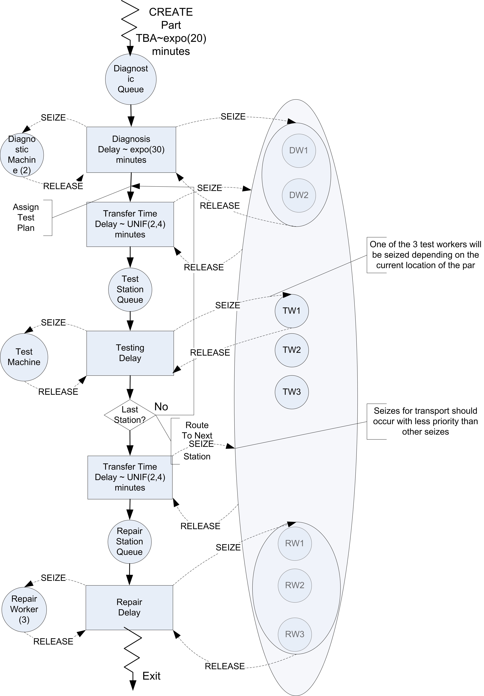
It should be clear from the figure that three sets of resources will be required in this model. A resource set should be defined for the diagnostic workers with two members. A resource set should be defined for the three repair workers. Finally, a resource set should be defined to hold each of the workers DW1, DW2, TW1, TW2, TW3, RW1, RW2, RW3 that are available for transporting parts. When a part requires diagnostics, it will seize one of the workers in the diagnostic workers set. When a part requires testing, it will seize the appropriate test worker for its current station. Finally, at the repair station, the part will seize one of the repair workers. In order to receive transport, the part will seize from the entire worker set.
7.1.1 Implementing Resource Constrained Transfer
Based on Figure 7.2, the basic pseudo-code for resource constrained transfer should be something like that shown in the following pseudo-code.
CREATE part
SEIZE 1 diagnostic machine
SEIZE 1 diagnostic worker from diagnostic worker set
DELAY for diagnostic time
RELEASE diagnostic machine
RELEASE diagnostic worker
ASSIGN test plan sequence
SEIZE 1 worker from worker set
ROUTE for transfer time by sequence to STATION Test
STATION Test
RELEASE worker
SEIZE appropriate test machine
SEIZE appropriate test worker
DELAY for testing time
RELEASE test machine
RELEASE test worker
SEIZE 1 worker from worker set
DECIDE
IF not at last station
ROUTE for transfer time by sequence to STATION Test
ELSE
ROUTE for transfer time by sequence to STATION Repair
ENDIF
END DECIDE
STATION Repair
RELEASE worker
SEIZE repair worker from repair worker set
DELAY for repair time
RELEASE repair worker
RECORD statistics
DISPOSEThis logic assumes that each worker has been placed in the appropriate sets. At the diagnostic station both the machine and a diagnostic worker are required. When the part completes the processing at the diagnostic station, the part seizes a worker from the overall set of workers and routes with a transfer delay to the appropriate testing station.
After arriving at the test station, the part releases the worker that performed the transport and proceeds with the seizing of the test machine and worker. Again, prior to the routing to the next station, a worker from the overall set of workers is seized. Notice also that the worker is released after the part is transferred to the repair station.
The combination of logic (SEIZE, ROUTE, STATION, RELEASE) is very common in entity transfer modeling. While this logic can be directly implemented with the corresponding modules, has provided two additional modules that enable a wide range of transfer modeling options through dialog box entries. These modules are the ENTER and LEAVE modules of the Advanced Transfer panel. The ENTER module represents a number of different modules based on how its dialog box entries are completed. Essentially, an ENTER module represents the concepts of a STATION, a delay for unloading, and the releasing of the transfer method. Within the LEAVE module, the user can specify a delay for loading, how the entity will be transferred out (e.g. resource, conveyor, transporter), and the routing of the entity. Now let’s take a look at how to modify the test and repair model from Chapter 4 to use these new constructs.
Starting with a copy of the RepairShop.doe file from Chapter 4, the first step is to define 8 individual resources for the diagnostic workers (2), the test workers (1 for each station), and the repair workers (3). This is illustrated in Figure 7.3, where the workers have been added to the RESOURCE module. Notice that the repair workers have been changed from having a single resource with capacity 3 to three resources each with capacity 1. This will enable all eight workers represented as resources to be placed in an overall worker(resource)set.
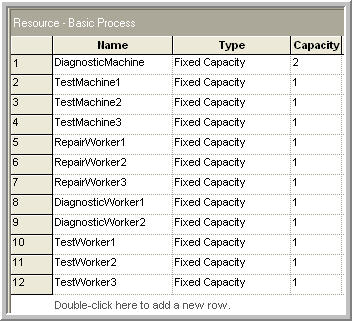
Use the SET module on the Basic Process panel to define each of the three sets required for this problem. Figure 7.4 illustrates the Workers set within the SET module. The DiagnosticWorkers and RepairWorkers sets are defined in a similar manner using the appropriate resources. Since there was no preference given in the use of the resources within the sets just listed them as shown. Recall that for the preferred resource selection rule, the order of the resources matters. The cyclical rule is used in this model.
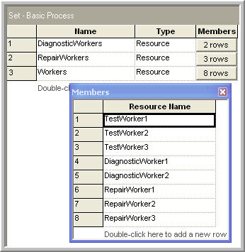
Now that the new resources and their sets have been defined, you need to update each of the PROCESS modules in order to ensure that the appropriate resources are seized and released. This is illustrated in Figure 7.5. In the Diagnostic Process dialog, the SEIZE-DELAY-RELEASE option has been used with the list of resources required. In this case, the part needs both 1 unit of the diagnostic machine and 1 unit of from the DiagnosticWorkers set. Each of the testing stations is done in a similar manner by first seizing the test machine and then seizing the test worker. The repair station is done in a similar fashion, except there is only the seizing of 1 unit from the RepairWorkers set. In all cases, the cyclical rule is used with the level of medium for the seize priority. If you are following along with the model building process, you should update each of the PROCESS modules as described. The completed model is found in the file RepairShopResourceConstrained.doe that accompanies this chapter.
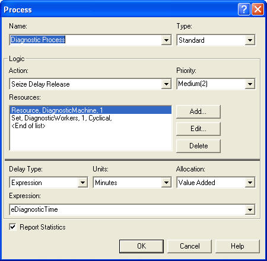
Now the ENTER and LEAVE modules can be specified. The STATION modules associated with the 3 testing stations and the repair station will be replaced with appropriately configured ENTER modules. In addition, the ROUTE modules will be replaced with LEAVE modules for routing to the testing stations, between the testing stations, and to the repair station. Let’s start with specifying how to leave the diagnostic station. Delete the ROUTE module associated with the diagnostic station and drag a LEAVE module into its place. Then fill out the LEAVE module as shown in Figure 7.6.
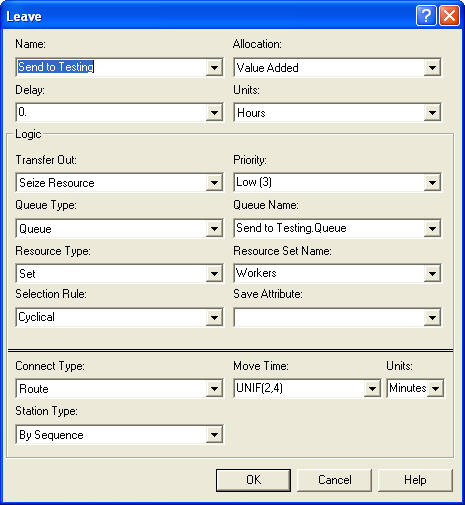
When you first open the LEAVE module, it will not look as shown in the figure. As can be seen in the figure, it is divided into three components: Delay, Logic (Transfer Out), and Connect Type. The Delay text field allows a time delay to be specified after getting the transfer out option. This can be used to represent a loading time. In this case, the loading time will be ignored (it takes negligible time for the worker to pick up the part). The transfer out logic allows the specification of the use of a transporter, a conveyor, a resource, or no constrained transfer (none). In this case, the seize resource option is required.
After selecting one of the resource constrained transfer options, additional options will become available. Because the transfer is constrained, the entity must have a place to wait for the transfer if the resource is not immediately available. Thus, there is the option to specify a queue for the entity. You can think of this queue as the output bin for the station. Just like in the PROCESS module, you can directly seize a resource or seize a resource from a resource set. In this case, one worker will be seized from the Workers set. Notice that a low seize priority has been specified. Since this priority is lower than that used by the parts when seizing with the PROCESS modules, the PROCESS modules will have higher priority when parts are waiting for processing over those waiting for transfer.
Finally, the Connect Type option within the LEAVE module is just like the corresponding options in the ROUTE module. In this case, the entity can be routed by sequence with a routing delay of UNIF(2,4) minutes. Each of the other ROUTE modules in the previous model should be replaced with LEAVE modules like that shown in Figure 7.6. To do this replacement quicker, you can simply delete the ROUTE modules and copy/paste LEAVE modules as per Figure 7.6. You should make sure to change the name of the modules after the cut/paste operation, since no two modules can have the same name.
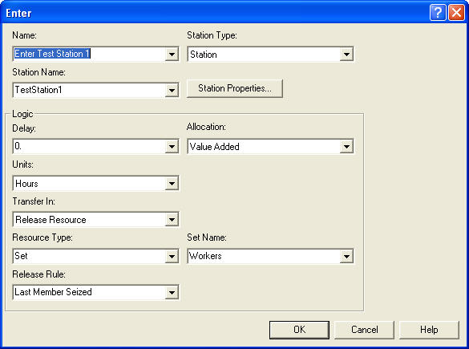
Now, the ENTER module can be specified. The ENTER module for test station 1 is given in Figure 7.7. Again, the ENTER module allows a composition of a number of other modules by having a Station Name and Logic options. Within the Logic options, you can specify a delay and the transfer in options. The Delay option represents a delay that occurs prior to the transfer in option. This is commonly used to represent a delay for unloading the transferring device. In this model, the time to unload (put down the part) is assumed to be negligible for the worker.
The transfer in option indicates how the entity should react with respect to the transfer mechanism. There are four options (Free Transporter, Exit Conveyor, Release Resource, and None). A simple unconstrained transfer uses the None option. In this model, the release resource option should be used. Since the worker that was seized for the transfer was part of a set, you can select the set option for the resource type. The release rule specifies how the resource will be released. In this case, the last member seized option should be used. This means that the most recent member of the Workers set that the part seized will be released.
Similar to what was done in Chapter 4, the model was run for 10 replications of 4160 hours to examine the effect on the performance measures. As can be seen in Figure 7.8, the probability of meeting the contract specification has been reduced by about 10% (from 82.51% in Chapter 4 to 72.04% in this example). This is due to the increase in the average system time.
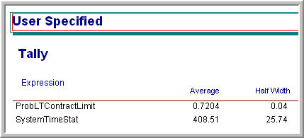
As can be seen in Figure 7.9, the time spent waiting in the station’s output buffer for pick up ranges from 13-15 minutes. Since there are 4 queues, this time has added significantly to the system time of the parts. In Figure 7.10, the utilization of the resources is relatively high (near 90% in most cases).
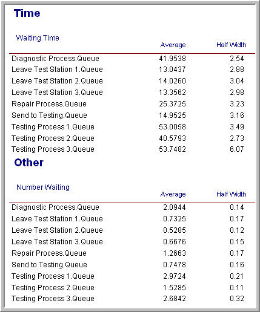
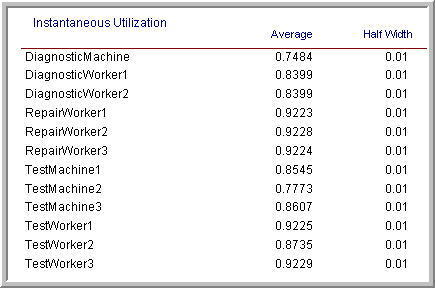
Because of the increased risk of not meeting the contract specifications for the system modeled with the more realistic use of workers to transfer parts, it might be useful to consider alternative ways to transfer the parts between stations. The next section examines the use of dedicated workers modeled as transporters to perform this work. Before proceeding with that modeling, the animation needs to be enhanced.
7.1.2 Animating Resource Constrained Transfer
If you ran the model of the previous section with the animation turned on you would notice the queues for the PROCESS modules and for the ROUTE modules. Unfortunately, you cannot see the entities during the transfer between stations. In this section, you will augment the basic flow chart animation with route animation, so that the flow of the entities between the stations will be visible. The animation of the stations will also be updated. Unfortunately, to really represent the use of the resources well within the animation, more effort would need to be expended on the animation than is useful at this time. For example, workers can be busy tending a process or walking. To properly represent this, the definition of additional resource states and their animation would need to be discussed. As will be covered in the next section, the use of transporters will greatly assist in that regard. Thus, for simplicity, the movement of the entities between the stations and will have a rather crude representation of the resource usage.
Figure 7.11 shows the final animation for the model. The completed model is available in the file, RepairShopResourceConstrainedTransferWithAnimation.doe. The key new animation concept that needs to be introduced is the Animate Transfer toolbar. Notice that in the figure, the toolbar has been detached. The two key buttons that will be used are the Station Marker button and the Route connector button.
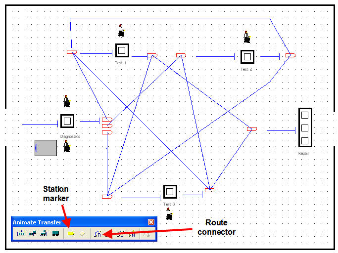
An overview of how to create this animation starting from the file RepairShopResourceConstrainedTransfer.doe is as follows:
Use Arena’s drawing toolbar to place the dark lines for the outline of the repair shop and for the dark rectangles to represent the stations. Use the text label button to label each of the station areas.
Use the Resource button on the Basic Animate toolbar to place each of the resources (Diagnostic machines, test machines, repair workers, diagnostic workers, and test workers). In the figure, the standard animation for resources was used to represent the diagnostic machines, the test machines, and the repair workers. The picture library (as described in
- was used to assign a seated worker to the idle picture and a worker that looks to be walking to the busy state of the diagnostic and test workers.
Delete the queues from the flow chart area and re-add them using the Queue button of the Basic Animate toolbar in the locations indicated in the figure. This process is similar to what was described in
Use the Variable button on the Basic Animate toolbar to place the variable animation to show the number of diagnostic machines that are currently busy.
Now, the animation of the routes taken by the parts as they move from station to station can be described. Recall that the test plan sequences are as shown in Table 7.1.
| Test Plan | % of parts | Sequence |
|---|---|---|
| 1 | 25% | 2,3,2,1 |
| 2 | 12.5% | 3,1 |
| 3 | 37% | 1,3,1 |
| 4 | 25% | 2,3 |
From the test plans, a from/to indicator table can be developed, which shows whether or not a part will go from a given station to another station. In Table 7.2, “Yes” means that the station sends a part from the origin station to the destination station. This table indicates whether or not a route needs to be placed between the indicated stations.
| Station | Test 1 | Test 2 | Test 3 | Repair |
|---|---|---|---|---|
| Diagnostics | Yes | Yes | Yes | No |
| Test 1 | No | No | Yes | Yes |
| Test 2 | Yes | No | Yes | No |
| Test 3 | Yes | Yes | No | Yes |
To animate the routes between these stations, you need to place station markers and connect the appropriate stations using the route connectors. To place a station marker, click on the station button of the Animate Transfer toolbar. Your cursor will turn into a cross-hair and you can place the marker in the model window where appropriate. As indicated in Figure 7.12, you can place a station marker for coming into the station and for exiting the station. This helps in visualizing the flow through the station. Station markers and connections will have to be placed for all the connections indicated in Table 7.2.
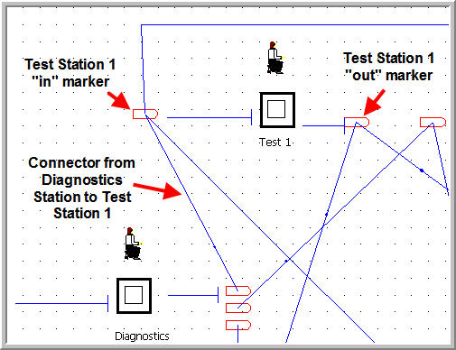
If you miss a connection, you just will not see the part moving between the associated stations. To connect existing station markers, click on the Route button. The cursor will turn into a cross-hair and you can select the appropriate station markers. Notice that the station marker will become highlighted as you connect. If you do not have existing station markers, after clicking the Route button your first click will lay down a station marker and then you move your cursor to the location for the second station marker. This process takes a little patience and practice. If you are having trouble selecting stations etc. you should consider using the View toolbar to zoom in to help with the process. In addition, if you have to repeat the same step over and over, you can right-click on the mouse after a step (e.g. placing a station marker) and choose the Repeat Last Action item from the pop up menu. By using this, you do not have to repeatedly press the toolbar button.
If you run the model with the animation on, you will see the parts moving along the route connectors between the stations, the resource states changing, and the queues increasing and decreasing. If you watch the animation carefully, you should notice that the repair workers become busy when either working on a part or transporting the part. As previously mentioned, it would be nice to separate that out in the animation. It can be done, but the STATESET module would need to be used for the resources. You should consult the Users Guide or help system for more information on the STATESET module.
Having the workers both tend to the processing on the machines and move the parts between the stations has caused the system time to increase. The next section examines the use of dedicated workers to transport the parts between stations using the TRANSPORTER module.
7.2 Constrained Transfer with Transporters
A transporter refers to one or more identical transfer devices that can be allocated to an entity for the purpose of transferring entities between stations. Two types of transporters are available:
- free path transporter
-
The travel time between stations depends on distance and speed.
- guided path transporter
-
The travel time between stations depends on distance and speed, and the movement of the transporter is restricted to a pre-defined network of intersections and links.
The standard delay option of the ROUTE or LEAVE modules assumes no resource constrained transfer. As indicated in the last section, the situation of a general resource being used for the transfer can be easily modeled. In that situation, the time of the transfer was specified. In the case of transporters, resource constrained transfer is still being modeled, but in addition, the physical distance of the transfer must be modeled. In essence, rather than specifying a time to transfer, you must specify a velocity and a distance for the transfer. From the velocity and distance associated with the transfer, the time of the transfer can be computed. In these situations, the physical device and its movement (with or without the entity) through the system is of key interest within the modeling.
To model with transporters, provides the following modules on the Advanced Transfer Panel:
- ALLOCATE
-
Attempts to allocate a unit of the transporter to the entity. This is like a seize module when using resources. If the transporter is not immediately available for the request, the entity must wait in a queue. ALLOCATE only gives a unit of the transporter to the entity. It does not move the transporter to the entity’s location. It changes the status from idle to busy. This is useful when you want to perform other activities before or during the time the empty transporter is moved to the entity’s location.
- MOVE
-
Causes an allocated transporter to move to a particular location. The controlling entity is not moved during this process.
- REQUEST
-
Attempts to allocate a transporter and then move the transporter to the location of the requesting entity. REQUEST has the net effect of having an ALLOCATE followed by a MOVE module.
- TRANSPORT
-
Causes the entity to be transported to its destination. To contrast TRANSPORT and MOVE, MOVE is moving unloaded and TRANSPORT is moving loaded with the entity. The entity must have possession of the transporter unit. Before the transporter can be reallocated to another requesting entity the transporter must be de-allocated using the FREE module.
- FREE
-
Causes the entity to de-allocate the transporter. This is similar to releasing a resource.
- HALT
-
Causes the transporter to stop moving and become inactive. If the transporter is currently busy at the time when an entity enters the Halt module, the status of the transporter is considered busy and inactive until the entity that controls the transporter frees the unit. If the transporter is idle at the time when an entity halts the transporter, it is set to inactive immediately. This is useful in modeling breakdowns during movement. Once halted, the transporter can not be allocated until it has been activated.
- ACTIVATE
-
This module causes a halted transporter to become active so that it can then continue its use within the model. It increases the capacity of a previously halted transporter or a transporter that was initially inactive (as defined in the TRANSPORTER module). The transporter unit that is activated will reside at the station location at which it was halted until it is moved or requested by an entity. If an allocation request is pending for the transporter at the time the unit is activated, the requesting entity will gain control of the transporter immediately.
- TRANSPORTER
-
This data module allows the user to define the characteristics of the transport device e.g. number of transporter units, default velocity, initial location, etc. In addition, the DISTANCE module associated with the transporter must be specified.
- DISTANCE
-
This data module allows the user to define the distances (in a consistent unit of measure, e.g.meters) for all the possible moves that the transporter may make. The values for the distances must be non-negative integers. Thus, if the distance is given in decimals (e.g. 20.2 meters), the distance should either be rounded (e.g. 20 meters) or scaled to integers (202 decameters). In any case, the units of measure for the distances must be consistent. The DISTANCE module essentially creates a from/to matrix for the distances between stations. These are the traveling distances for the transporters not the entities and should include both loaded and empty moves. For n station locations, you will have to specify at most n(n-1) possible distances. The distances in the distance matrix do not have to by symmetrical. In addition, you do not need to specify a distance if it never occurs (either when the transporter is loaded or empty). If a distance is not given it is assumed to be zero. If the distance is symmetric, only one pair needs to be specified.
Figure 7.13 illustrates the general case of using a transporter and how it relates to the modules. Since transporters are used to move entities between two stations, two stations have been indicated in the figure. At the first station, the entity performs the standard SEIZE, DELAY, and RELEASE logic. Then, the entity attempts to allocate a unit of the transporter via the REQUEST module. Notice that there is a queue for waiting for the transporter to arrive. The REQUEST also causes the transporter to move to the entity’s location, as indicated with the travel time to origin activity. Then, a loading activity can occur. After the loading activity has completed, the entity experiences the delay for the transport to the desired location. As can be seen in the figure, the LEAVE module facilitates this modeling. Once the entity arrives at its destination station, there can be a delay for unloading the transfer devise and then the transporter is freed. As shown in the figure, conceptually, the HALT and ACTIVATE modules affect whether or not the transporter is available to be requested/allocated.
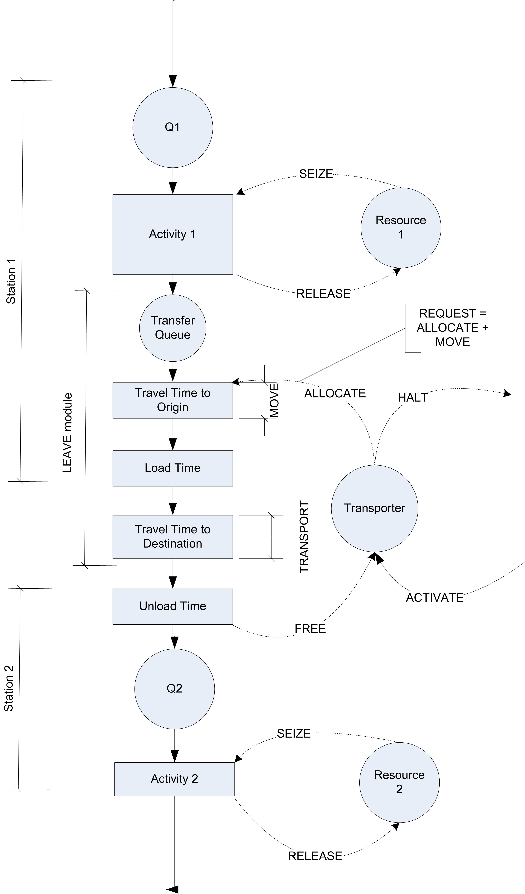
The activity diagram in Figure 7.13 represents very well how the test and repair system will need to operate with transporters. The next section discusses how to use transporters to model the dedicated transport workers in the test and repair shop.
7.2.1 Test and Repair Shop with Workers as Transporters
The results of the constrained resource analysis indicated that modeling constrained transfer for the parts in the test and repair system can have a significant effect on the system’s ability to meet the contract requirements. This may be due to having the workers share the roles of tending the machines and transporting the parts. The following example investigates whether or not a set of dedicated workers would make sense for this system. In particular, the number of workers to dedicate to the transport task needs to be determined. Since there is a lot of walking involved, the model needs to be more precise in the physical modeling of the situation. This could also allow different layout configurations to be simulated if the relocation of the stations would make a difference in the efficiency of the system.
To model this situation using transporters, the distance between the stations and a way to model the velocity of transport are required. Since the workers have a natural variability in the speed of their walking, a model for human walking speed is needed. Based on some time study data, the velocity of a worker walking in the facility has been determined to be distributed according to a triangular distribution with a minimum of 22.86, a mode of 45.72, and a maximum of 52.5, all in meters per minute. Since this distribution will be used in many locations in the model, an EXPRESSION should be defined, called eWalkingTimeCDF, which will be equal to TRIA(22.86, 45.72, 52.5).
Based on measuring the distance between the stations, the approximate distance between the stations has been determined as given in Table 7.3. Recall that both the loaded and unloaded distances for the transporter must be specified. For example, even though no parts are routed from repair to diagnostics, the distance from repair to diagnostics must be given because the worker (transporter) may be at the repair station when something needs to be moved from the diagnostic station. Thus, the worker must walk from the repair station to the diagnostic station (unloaded) in order to pick up the part. Notice also that the distances do not have to be symmetric (i.e. the distance from test 1 to test 2 does not have to be the same as the distance from test 2 to test 1).
| Station | Diagnostics | Test 1 | Test 2 | Test 3 | Repair |
|---|---|---|---|---|---|
| Diagnostics | – | 40 | 70 | 90 | 100 |
| Test 1 | 43 | – | 10 | 60 | 80 |
| Test 2 | 70 | 15 | – | 65 | 20 |
| Test 3 | 90 | 80 | 60 | – | 25 |
| Repair | 110 | 85 | 25 | 30 | – |
Starting with the finished model for the resource constrained example (without the animation) you can make small changes in order to utilize transporters. The first step is to define the distances. Figure 7.14 shows the DISTANCE module from the Advanced Transfer panel. The spreadsheet view allows an easier specification for the distances as shown in the figure. Multiple distance sets can be defined and used within the same model. The distance set must be given a name so that the name can be referenced by the TRANSPORTER module. Now, the transporters for the model can be defined using the TRANSPORTER module.
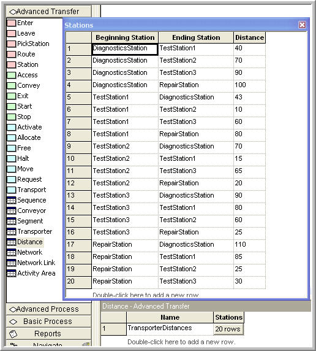
The TRANSPORTER module, see Figure 7.15, allows the transporter to be given a name and various other attributes. The TRANSPORTER module defines a fleet of identical mobile resources(e.g. vehicles). You can specify the number of units of the transporter. In this example, there will be 3 workers (all identical) that can transport the parts. The type of transporter in this case is Free Path and the Distance Set has been specified with the name used in the appropriate distance set from the DISTANCE module. The velocity within the TRANSPORTER module must be a real number (it cannot be an expression). The default value of the velocity will be used in the dialog because the velocity will be specified for each movement of the transporter within the model. The initial position specifies where the transporter will be located at the beginning of the replication. In this case, the workers will start active at the diagnostics station.
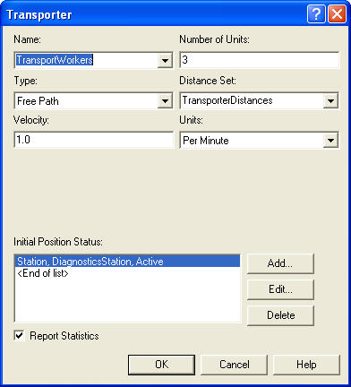
Now that the data modules are defined, let’s take a look at the overall model. Figure 7.16 shows the overall test and repair model after the modifications needed to use transporters. If you have the model open you should notice the new blue colored modules. These are from the Advanced Transfer panel and have replaced the LEAVE modules from the previous model.
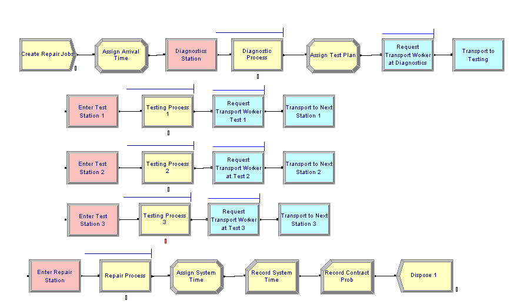
The other change from the previous model involves the updating of the ENTER modules. The ENTER module change is very straight forward. You just need to specify that the type of transfer in option is Free Transporter and indicate what transporter to free. Figure 7.17 illustrates the changes to the ENTER module for entering test station 1. By default the transporter unit that the entity currently has is freed.
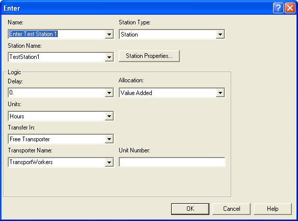
The changes to the LEAVE module are not as simple. Because a random velocity value is needed whenever the worker begins moving, the LEAVE module cannot be used. The LEAVE module relies on the default velocity for the transporter as defined in the TRANSPORTER module. Since the default velocity in the TRANSPORTER module must be a real number (not an expression), the REQUEST and TRANSPORT modules are used in this example.
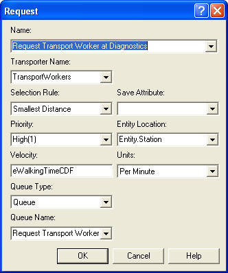
Figure 7.18 shows the REQUEST module for the example. In the REQUEST module, you must specify which transporter to request and give the selection rule. The selection rules are the similar in concept to the selection rules for resources. The transporter selection rules are:
- Cyclical
-
cyclic priority selects the first available transporter beginning with the successor of the last transporter allocated (cycles through the transporters)
- Largest Distance
-
select the available transporter farthest from the requesting station
- Preferred Order
-
select the available transporter unit which has the lowest unit number
- Random
-
select randomly from the available transporter units
- Smallest Distance
-
select the nearest available transporter
- Specific Member
-
a specific unit of the transporter
- ER(Index)
-
select based on rule number Index defined in experiment frame
- UR(Index)
-
select transporter index UR, where UR is computed in a user coded function UR(LENT,NUR)
The selection rule is only used if one or more units of the transporter are available to be allocated. An entity arrives at the REQUEST module, requests the transporter according to the specified selection rule. If a unit of the transporter is available (active and idle), the transporter is allocated to the entity; thereby, making the transporter busy (and allocated). The selected transporter can be saved in the save attribute. The travel time is calculated from the transporter’s present station to the station of the requesting entity and imposes a time delay representing the travel time using the velocity argument. If a transporter is not available the entity waits in queue. This module gets the transporter to the entity. Now you have to use the transporter to transport the entity using the TRANSPORT module.
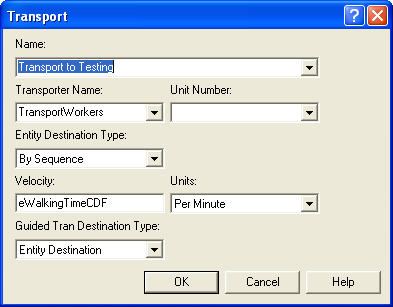
Figure 7.19 shows the TRANSPORT module for the test and repair example. The TRANSPORT module is very similar to the ROUTE module, except the user specifies the transporter to use by name (and/or unit number). In most cases, this will be the same transporter as allocated in the REQUEST module. Then, the user can specify the type of destination (By Sequence, attribute, station, or expression). In this case, the By Sequence option should be used. In addition, the velocity of the transport can be specified. The Guided Tran Destination Type field allows the user to send the transporter to a location different than that specified by the entity’s destination. This is useful in guided path transporters to send the transporter through specific intersections on its way to the final destination. This option will not be used in this text.
After making these changes, you can run the model with the default animation and find out how the system operates with the transporters. Recall that in Figure 7.15 that there was a little check box to indicate whether or not to collect statistics on the transporter. If this is checked, and the Transporters check-box is checked on the Project Parameters tab on the Run Setup dialog, then the number busy and utilization of the transporters will be reported automatically.
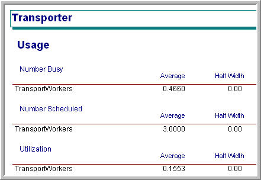
As can be seen in Figure 7.20, the utilization of the three transporters is very low. Less than three workers a probably need for the transport task. The reader is asked to explore this issue an exercise.
7.2.2 Animating Transporters
A significant advantage of using transporters in this situation rather than resource constrained transfer is the animation that is available with transporters. This section converts the previous animation so that it uses transporters. The basic steps in converting the model are as follows:
Cut and paste the animation from the file, RepairShopResourceConstrainedTransferWithAnimation.doe, to the file RepairShopWithTransportersNoAnimation.doe and rename it.
Select and delete each route connector and station marker from the previous animation.
Delete each animation queue from the flow chart modules. Redefine each animation queue with the appropriate name within the copied animation.
Use the Add Distance button on the Animate Transfer toolbar to place station markers and distance connectors for every from/to combination within the distance set as shown in
- For every station marker, make sure that the “Parking" check-box is checked. This will indicate that the transporter will be shown at that station when it is idle (parked).
Add a variable animation to show the current number of busy transporters. This can be easily done using the expression builder to find the transporter variables (
NT(TransportWorkers)). To learn more about the variables associated with transporters look up “Transporter Variables" within Arena’s help system.Use the transporter button in the Animate Transfer toolbar to define a transporter picture. The process is essentially the same as that for defining a resource animation picture as shown in
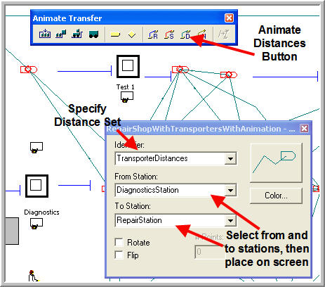
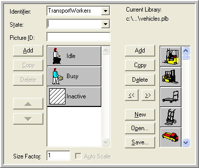
Now the animation involving the transporters is complete. If you run the model with animation turned on, you will see that there is only about 1 unit of the transporter busy at any time. Also, you will see that the idle transporters become parked after their transport when no other transport requests are pending. They will remain at the station where they last dropped off a part until a new transport request comes in. In the animation, a picture was used that showed a person sitting for idle and walking/carrying something to show busy. Another way to show that the transporter is carrying something is to enable the ride point for the transporter. To place a ride point in the busy transporter picture, select the Ride Point option from the Object menu after double-clicking on the busy picture in the transporter animation dialog. If no ride point is defined, the entity picture will not appear.
In this model, the worker stays at the location where they drop off the part if no part requires transport. Instead, the worker could go to a common staging area (e.g. in the middle of the shop) to wait for the next transport request. The trick to accomplishing this is to not use the ENTER module. The basic idea would be implemented as follows:
STATION
DECIDE
IF requests are waiting
FREE the transporter
continue normal station processing
ELSE
SEPARATE 1 duplicate into station
MOVE to staging area
FREE the transporter
ENDIF
END DECIDENotice that in the case of no waiting requests, a duplicate of the entity is used to continue the control of the transporter to move it to the staging area. The reader is asked to implement this idea as an extension to this problem in the exercises. The notion of having an entity control or “drive" the transporter around is very useful in modeling systems that have complicated transporter allocation rules or systems that naturally have a driver, e.g. bus systems.
A distance module allows the physical transport aspects of systems to be modeled. An important aspect of this type of modeling is the movement of entities through space. The conveyor constructs allow for a finer representation of the usage of space between stations. That topic is taken up in the next section.
7.3 Modeling Systems with Conveyors
A conveyor is a track, belt, or some other device that provides movement over a fixed path. Typically, conveyors are used to transport items that have high volumes over short to medium range distances. The speeds of conveyance typically range from 20-80 feet per minute to as fast as 500 feet per minute. Conveyors can be gravity based or powered. The modeling of conveyors can be roughly classified as follows:
- Accumulating
-
Items on the conveyor continue to move forward when there is a blockage on the conveyor.
- Non-accumulating
-
Items on the conveyor stop when the conveyor stops
- Fixed spacing
-
Items on the conveyor have a fixed space between them or the items ride in a bucket or bin.
- Random spacing
-
Items are placed on the conveyor in no particular position and take up space on the conveyor.
You have experienced conveyors in some form. For example, the belt conveyor at a grocery store is like an accumulating conveyor. An escalator is like a fixed spaced non-accumulating conveyor (the steps are like a bucket for the person to ride in. People movers in airports are like non-accumulating, random spacing conveyors. When designing systems with conveyors there are a number of performance measures to consider:
- Throughput capacity
-
The number of loads processed per time
- Delivery time
-
The time taken to move the item from origin to destination
- Queue lengths
-
The queues to get on the conveyor and for blockages when the conveyor accumulates
- Number of carriers used or the space utilized
-
The number of spaces on the conveyor used
The modeling of conveyors does not necessarily require specialized simulation constructs. For example, gravity based conveyors can be modeled as a PROCESS or a DELAY with a deterministic delay. The delay is set to model the time that it takes the entity to fall or slide from one location to another. One simple way to model multiple items moving on a conveyor is to use a resource to model the front of the conveyor with a small delay to load the entity on the conveyor. This allows for spacing between the items on the conveyor. Once on the conveyor the entity releases the front of the conveyor and delays for its move time to the end of the conveyor. At the end of the conveyor, there could be another resource and a delay to unload the conveyor. As long as the delays are deterministic, the entities will not pass each other on the conveyor. If you are not interested in modeling the space taken by the conveyor, then this type of modeling is very reasonable. (Henriksen & Schriber, 1986) discuss a number of ways to approach the simulation modeling of conveyors. When space becomes an important element of the modeling, then the simulation language constructs for conveyors become useful. For example, if there actually is a conveyor between two stations and the space allocated for the length of the conveyor is important to the system operation, you might want to use conveyor related modules.
In , a conveyor is a material-handling device for transferring or moving entities along a pre-determined path having fixed pre-defined loading and discharge points. Each entity to be conveyed must wait for sufficient space on the conveyor before it can gain entry and begin its transfer. In essence, simulation modeling constructs for conveyors model the travel path via a mapping of space/distance to resources. Space along the path is divided up into units of resources called cells. The conveyor is then essentially a set of moving cells of equal length. Whenever an entity reaches a conveyor entry point it must wait for a predefined amount of unoccupied and available consecutive cells in order to get on the conveyor.
Figure 7.23 illustrates the idea of modeling a conveyor as a set of contiguous cells representing the space on the conveyor. One way to think of this is like an escalator with each cell being a step.

In the figure, if each cell represents 1 foot and the total length of the conveyor is 15 feet, then there will be 15 cells. The cell size of the conveyor is the smallest portion of a conveyor that an entity can occupy. In modeling with conveyors, the size of the entity also matters. For example, think of people riding an escalator. Some people have a suitcase and take up two steps and others do not have a suitcase an only take up one step. An entity must acquire enough contiguous cells to hold their physical size in order to be conveyed.
The key modules for modeling the use of conveyors are:
- ACCESS
-
When an entity enters an ACCESS module, it will wait until the appropriate amount of contiguous cells are available at the access point. Once the entity has control of the cells, it can then be conveyed from its current station to a station associated with the conveyor. This is similar in concept to the ALLOCATE module for transporters.
- CONVEY
-
The CONVEY module causes the entity to move from its origin station to its next station. The time to move is based on the velocity of the conveyor and the distance between the stations. This similar in concept to the MOVE module for transporters.
- EXIT
-
The EXIT module causes the entity to release the cells that it holds on the conveyor. If another entity is waiting in queue for the conveyor at the same station where the cells are released, the waiting entity will then access the conveyor. This is like releasing a resource or freeing a transporter.
- START
-
The START module changes the status of the conveyor to active. Entities may reside on the conveyor while it is stopped. These entities will maintain their respective positions on the conveyor once it is started. The entity using the START module does not have to be on the conveyor.
- STOP
-
The STOP module changes the status of the conveyor to inactive. The conveyor will stop immediately, regardless of the number of entities on the conveyors. This is useful for modeling conveyor failures or blockages on the conveyor. The entity using the STOP module does not have to be on the conveyor.
- CONVEYOR
-
This data module defines whether or not the conveyor is an accumulating or non-accumulating conveyor, the cell size (in physical units e.g. feet), and the velocity. A conveyor consists of a sequence of segments as defined by the SEGMENT module. The sum of the distances among the stations on the conveyor (specified by SEGMENT module) must be divisible by the cell size. If not, an error will occur when the model is checked.
- SEGMENT
-
This data module defines the segment network that makes up a conveyor. Each segment is a directed link between two stations forming a network. The conveyor path is defined by a beginning station and a set of next station-distance pairs. The beginning station of the segment is the beginning station number or name, and the next station defines the next station name that is a length of distance units from the previously defined station. The length of the segment must be specified in integer distance units (feet, meters, etc.). No station should be repeated within the segment network unless the conveyor is a loop conveyor. In that case, the last ending station should be the same as the beginning station for the segment network.
As was the case for transporters, the ENTER and LEAVE modules of the advanced transfer template will also provide some conveyor functionality. LEAVE provides for ACCESS and CONVEY. ENTER provides for EXIT. The modules work slightly differently for accumulating and non-accumulating conveyors.
Non-accumulating conveyors travel in a single direction, and the spacing remains the same between the entities. When an entity is placed on the conveyor, the entire conveyor is actually disengaged or stopped until instructions are given to transfer the entity to its destination. When the entity reaches its destination, the entire conveyor is again disengaged until instructions are given to remove the entity from the conveyor, at which time it is engaged or started.
As previously mentioned, the conveyor is divided into a number of cells. To get on the conveyor and begin moving, the entity must have its required number of contiguous cells. For example, in Figure 7.24, the circle needed 1 cell to get on the conveyor. Suppose the hexagon was trying to get on the conveyor. As cell 2 became available, the hexagon would seize it. Then it would wait for the next cell (cell 1) to become available and seize it. After having both required cells, it is “on" the conveyor. But moving on a conveyor is a bit more continuous than this. Conceptually, you can think of the hexagon, starting to move on the conveyor when it gets cell 2. When one cell moves, all cells must move, in lock step. Since entities are mapped on to the cells by their size, when a cell moves the entity moves. Reversing this analogy becomes useful. Suppose the cells are fixed, but the entities can move. In order for an entity to”take a step” it needs the next cell. As it crosses over to the next cell it releases the previous cell that it occupied. It is as if the entity’s “step size” is 1 cell at a time.

Figure 7.25 illustrates an approximate activity flow diagram for an entity using a non-accumulating conveyor. Suppose the entity size is 2 feet and each cell is 1 foot on the conveyor. There is a queue for the entities waiting to access the conveyor. The cells of the conveyor act as resources modeling the space on the conveyor. The movements of the entity through the space of each cell are activities. For the 2 foot entity, it first seizes the first cell and then moves through the distance of the cell. After the movement it seizes the next cell and moves through its length. Because it is 2 feet (cells) long it seizes the 3rd cell and then releases the first cell before delaying for the move time for the 3rd cell. As cells become released other entities can seize them and continue their movement. The repeated pattern of overlapping SEIZE and RELEASE modules that underlie conveyor modeling clearly depends upon the number of cells and the size of the entity. Thus, the activity diagram would actually vary by the size of the entity (number of cells required).
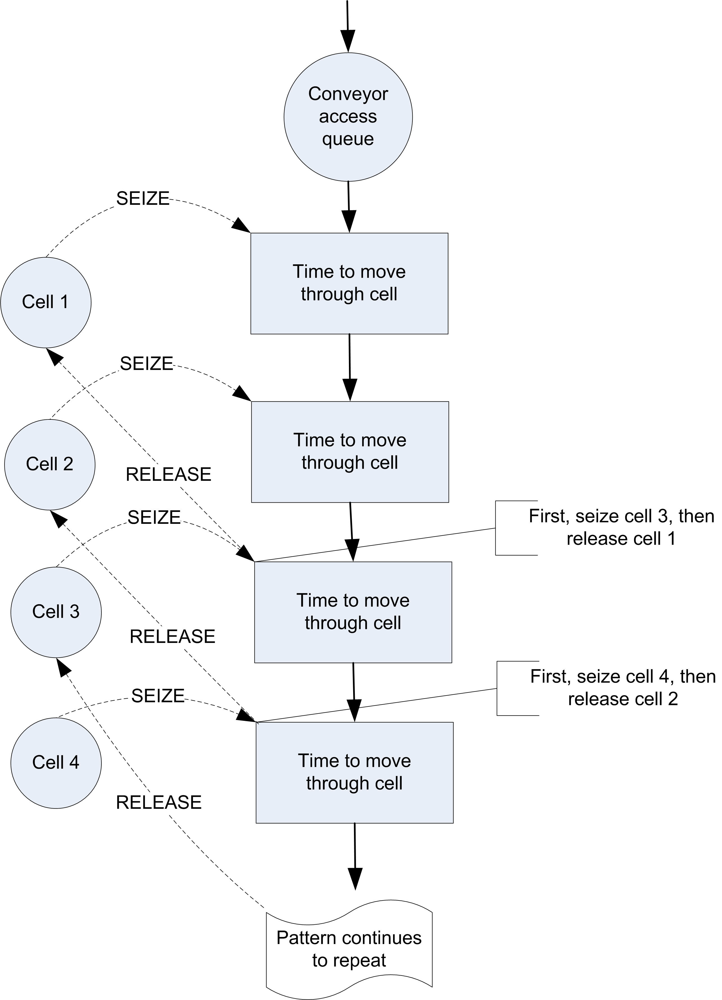
The larger the number of cells to model a segment of a conveyor the more slowly the model will execute; however, a larger number of cells allows for a more “continuous" representation of how entities actually exit and leave the conveyor. Larger cell sizes force entities to delay longer to move and thus waiting entities must delay for available space longer. A smaller mapping of cells to distance allows then entity to”creep" onto the conveyor in a more continuous fashion. For example, suppose the conveyor was 6 feet long and space was modeled in inches. That is, the length of the conveyor is 72 inches. Now suppose the entity required 1 foot of space while on the conveyor. If the conveyor is modeled with 72 cells, the entity starts to get on the conveyor after only 1 inch (cell) and requires 12 cells (inches) when riding on the conveyor. If the mapping of distance was 1 cell equals 1 foot, the entity would have to wait until it got a whole cell of 1 foot before it moved onto the conveyor.
Now you are ready to put these concepts into action.
7.3.1 Test and Repair Shop with Conveyors
For simplicity, the test and repair shop will be used for illustrating the use of conveyors. Figure 7.26 shows the test and repair shop with the conveyors and the distance between the stations. From the figure, the distances from each station going in clockwise order are as follows:
Diagnostic station to test station 1, 20 feet
Test station 1 to test station 2, 20 feet
Test station 2 to repair, 15 feet
Repair to test station 3, 45 feet
Test station 3 to diagnostics, 30 feet

Assume that the conveyor’s velocity is 10 feet per minute. These figures have been provided in this example; however, in modeling a real system, you will have to tabulate this information. To illustrate the use of entity sizes, assume the following concerning the parts following the four test plans:
Test plan 1 and 2 parts require 1 foot of space while riding on the conveyor
Test plan 3 and 4 parts require 2 feet of space while riding on the conveyor
The conveyor logic will first be implemented without animation. Then, the animation for the conveyors will be added. To convert the previous model so that it uses conveyors, the model, RepairShopWithTransportersNoAnimation.doe, should be changed as follows:
Delete the TRANSPORTER and DISTANCE modules defined for using the transporter
Delete the REQUEST and TRANSPORT modules for leaving the stations and replace them with LEAVE modules. The LEAVE modules will be filled out in a moment.
Add a variable array called
vSizes()of dimension 4 to hold the sizes of the parts following each of the test plans as shown inSave your file. The completed model can be found in the file RepairShopWithConveyorsWithNoAnimation.doe.
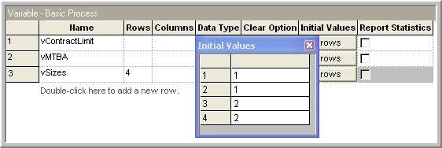
Now, you are ready to define the conveyor and its segments. You will first define the segments for the conveyor, then the conveyor itself. Figure 7.28 shows the segments to be used on the conveyor. First, give the segment a name and then specify the station that represents the beginning station. The beginning station is the station associated with the first segment of the conveyor. Since this is a loop conveyor, the beginning station is arbitrary. The diagnostic station is used here since this is where the parts enter the system.
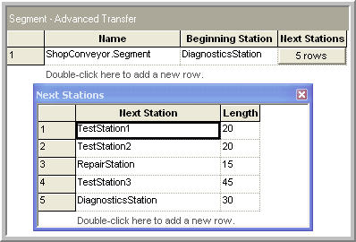
Then, the next station and the distance to the next station are given for each part of the conveyor. Notice that the distances have been added as shown in Figure 7.26. The lengths specified in Figure 7.28 are in the actual physical distances (e.g. feet). The mapping to cells occurs in the CONVEYOR module.
Figure 7.29 shows the CONVEYOR module. To associated the conveyor with a segment use the Segment Name drop down box. The next decision is the type of conveyor. In this case, a non-accumulating conveyor should be used.
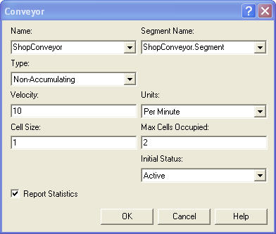
The velocity of the conveyor is 10 feet per minute. Now, the cell size and the maximum cells occupied text-boxes must be completed. The cell size is the most important decision. Thinking back to Figure 7.25, it should be clear that space must be represented by discrete cells of a specified integral length. Thus, the total length of the conveyor must be integer valued and the cell size must result in an integer number of cells for each segment. The lengths of each distance specified in the SEGMENT module for the example are all divisible by 5. Thus, you could choose a cell size of 5. This would mean that each cell would be 5 feet in length. Since entities access the conveyor by grabbing cells, this hardly seems appropriate if the parts are 1 and 2 feet in length, respectively. In the case of a 5 foot cells size, the parts would have a lot of space between each other as they ride on the conveyor. Instead, the cell size will be specified as 1 foot. This will always work, since every number is divisible by 1. It also works well in this case, since the smallest part is 1 foot and the distances in the SEGMENT module are based on the units of feet. Now, the maximum number of cells text field is easy. This represents the size of the biggest entity in terms of cells. This should be 2 in this case since parts that follow test plans 3 and 4 are 2 feet in length.
With the CONVEYOR and SEGMENT modules defined, it is an easy matter to change the ENTER and LEAVE modules to use the conveyors. The first item to address is to make sure that each created part knows its size so that the size can be used in the LEAVE module. You can do this with the “Assign Test Plan" ASSIGN module as shown in Figure 7.30.
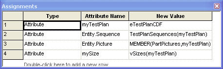
The LEAVE modules must be updated to use the conveyor to transfer out and to indicate the number of cells required by the entity. This is done in Figure 7.31 using the entity’s mySize attribute. Each of the other LEAVE modules for the other stations should be updated in a similar fashion. Now, you must update the ENTER module so that the entity can exit the conveyor after arriving to the desired station.
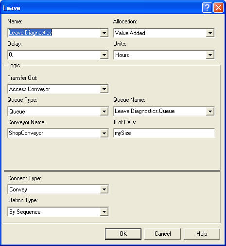
In Figure 7.32, the Exit Conveyor option is used when transferring into the Test 1 Station. In both of the ENTER and LEAVE modules, the option of delaying the entity is available. This can be used to represent a loading or an unloading time for the conveyor.
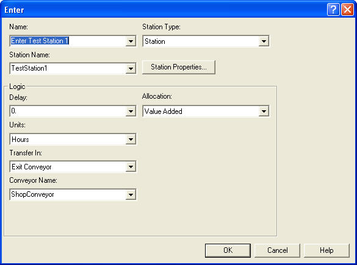
With the conveyor statistics check-box clicked, the conveyor statistics will appear on the summary reports. See Figure 7.33. The utilization is calculated for the conveyor, regardless of conveyor type. This utilization represents the length of entities on the conveyor in comparison to the length of the entire conveyor over the simulation run. Thus, conveyor utilization is in terms of the space utilized. In addition, there is very little queuing for getting on the conveyor. The statistics for the conveyor in this problem indicate that the conveyor is not highly utilized; however, the chance of meeting the contract limit is up to 80%. The volumes in this example may make it difficult to justify the use of conveyors for the test and repair shop. Ultimately, the decision would come down to a cost/benefit analysis.
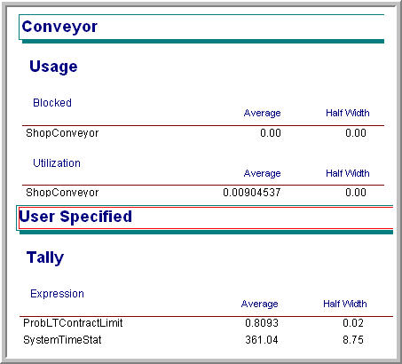
7.3.2 Animating Conveyors
To augment the model with animation, the Animate Transfer toolbar can be used. To visibly discern the plan that an entity is following within the animation, you can define a picture set, with appropriately drawn pictures for each type of plan. This is illustrated in Figure 7.34 and Figure 7.35. The assignment to the Entity.Picture attribute is shown in Figure 7.39.
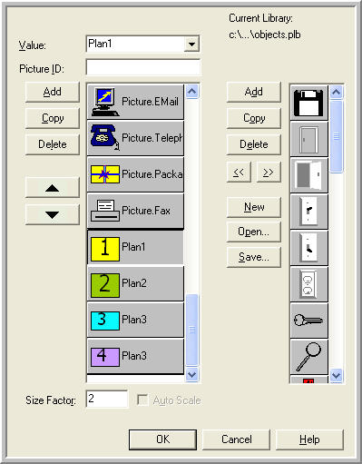
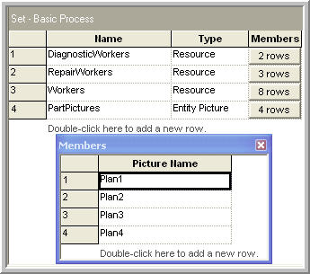
To update the previous transporter animation, perform the following steps.
Copy and paste the animation elements from the file, RepairShopWithTransportersWithAnimation.doe to your own model file. The completed model is called, RepairShopWithConveyorsWithAnimation.doe.
Delete the transporter picture, station markers, and distance connectors.
Using the Animate Transfer toolbar’s Segment button make station markers and segment connectors to represent the conveyors as shown in Figure 7.26. The segment animation dialog is shown in Figure 7.36. It works very much like the route and distance animation dialog.
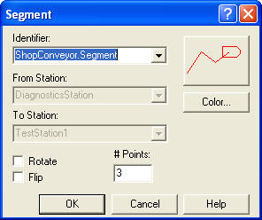
After the segments have been laid down, you might want to place some lines to represent the conveyors. This was done in Figure 7.36 where the roller pattern from the line patterns button on the drawing toolbar was also used. That’s it! Animating conveyors is very easy. If you run the model with the animation on you will see that the entities move along the conveyor segments, getting on and off at the appropriate stations. You will also clearly see that for the majority of time the conveyor does not have very many parts. This section concentrated on non-accumulating conveyors. The next section describes how accumulating conveyors operate and discusses a number of other conveyor modeling issues.
7.3.3 Miscellaneous Issues in Conveyor Modeling
This section discusses accumulating conveyors, how to model merging conveyors, diverging conveyors, how to allow processing to occur on the entity while it is still on the conveyor, and re-circulation conveyors.
7.3.3.1 Accumulating Conveyors
An accumulating conveyor can be thought of as always running. When an entity stops moving on the conveyor (e.g. to unload), other entities are still allowed on the conveyor since the conveyor continues moving. When entities on the conveyor meet up with the stopped entity, they stop, and a queue accumulates behind the stopped entity until the original stopped entity is removed or transferred to its destination.
As an analogy, imagine wearing a pair of roller blades and being on a people mover in an airport. Don’t ask how you got your roller blades through security! While on the people mover you aren’t skating (you are standing still, resting, but still moving with the people mover). Up ahead of you, some seriously deranged simulation book author places a bar across the people mover. When you reach the bar, you grab on. Since you are on roller blades, you remain stationary at the bar, while your roller blades are going like mad underneath you.
Now imagine all the people on the mover having roller blades. The people following you will continue approaching the bar until they bump into you. Everyone will pile up behind the bar until the bar is removed. You are on an accumulating conveyor! Notice that while you were on the conveyor and there was no blockage, the spacing between the people remained the same, but that when the blockage occurred the spacing between the entities decreased until they bump up against each other. To summarize:
Accumulating conveyors are always moving.
If an entity stops to exit or receives processing on the conveyor, other entities behind it are blocked and begin to queue up on the conveyor.
Entities in front of the blockage continue moving.
When a blockage ends, blocked entities, may continue, but must first wait for the entities immediately in front of them to move forward.
In modeling accumulating conveyors, the main differences occur in the actions of the ACCESS and CONVEY modules. Instead of disengaging the conveyor as with non-accumulating conveyors the conveyor continues to run. ACCESS allocates the required number of cells to any waiting entities as space becomes available. Any entities that are being conveyed continue until they reach a blockage. If the blocking entity is removed or conveyed, the accumulated entities only start to move when the required number of cells becomes available.
In the ACCESS module the number of cells still refers to the number of cells required by the entity while moving on the conveyor; however, you must indicate what the space requirements will be when the entities experience a blockage. In the CONVEYOR module, if the accumulating conveyor option is selected, the user must decide on how to fill in the Accumulation Length text field. The accumulation length specifies the amount of space required by the entities when accumulating. It does not need to be the same as the amount of space implied by the number of cells required when the entity is being conveyed. Also, it doesn’t have to be divisible into an even number of cells. In addition, as can be seen in Figure 7.37, the accumulation length can also be an entity (user defined) attribute. Thus, the accumulation size can vary by entity. Typically, the space implied by the number of cells required while moving will be larger than that required when accumulating. This will allow spacing between the entities when moving and allow them to get closer to each other when accumulating.
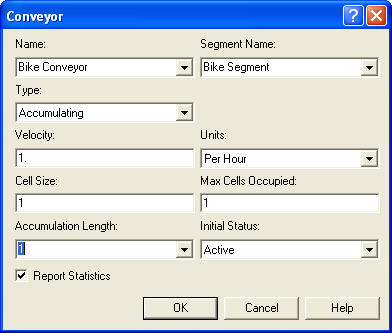
The test and repair example barely required non-accumulating conveyors. Thus, to illustrate accumulating conveyors, a SMART file, (Smarts101.doe), will be used. See Figure 7.38. The SMART files can be found within the folder within your Arena installation.
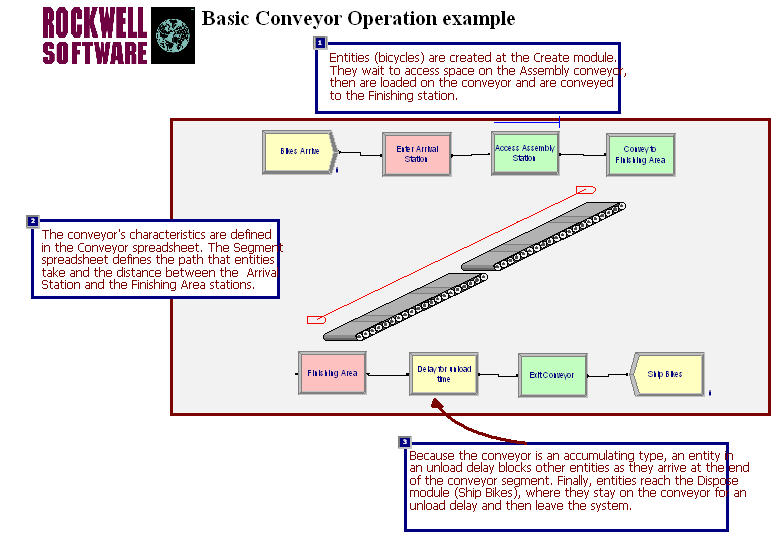
In this example, there is 1 segment for the conveyor of length 10, which (while not specified in the model) can be assumed to be in meters. The velocity is only 1 meter per hour, the conveyor cell size is 1, and the maximum size of an entity is 1. The entities, which are bicycles, enter at the arrival station and access the conveyor, where they are conveyed to the finishing area. You can think of the bicycles as being assembled as they move along the conveyor. This type of system often occurs in assembly lines. Once the bicycles reach the finishing area, they experience an unload delay prior to exiting the conveyor. Because the unload delay occurs prior to exiting the conveyor, the entity’s movement is blocked and an accumulation queue will occur behind the entity on the conveyor. You should run the model and convince yourself that the bicycles are accumulating.
When modeling with accumulating conveyors, additional statistics are collected on the average number of accumulating entities if the conveyors check-box is checked on the Project Parameters tab of the Run Setup dialog box. You can check out the help system to see all the statistics.
7.3.3.2 Merging and Diverging Conveyors
In conveyor modeling a common situation involves one or more conveyors feeding another conveyor. For example in a distribution center, there may be conveyors associated with each unloading dock, which are then attached to a main conveyor that takes the products to a storage area. To model this situation, the feeding conveyors and the main conveyor can be modeled with different CONVEYOR modules and separate SEGMENT definitions. In this distribution center example, an item accesses the unloading dock’s conveyor rides the length of the conveyor and then attempts to get on the main conveyor. After the entity has accessed the main conveyor, the entity exits its current unloading dock conveyor.
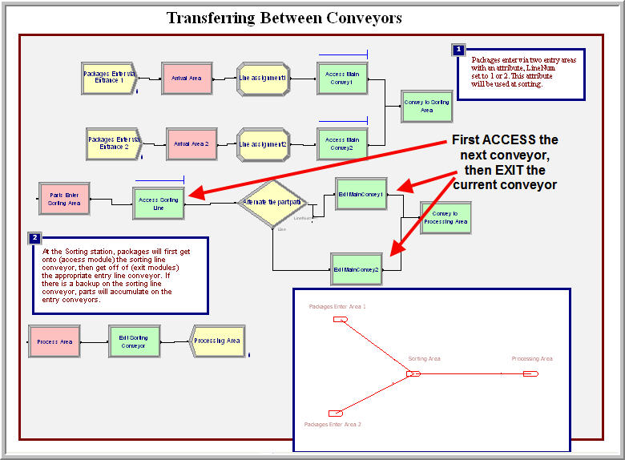
Arena has two SMART files that illustrate these concepts. Let’s first take a look at Smarts107.doe. Figure 7.39 illustrates the overall model. There are two conveyor lines for area 1 and area 2, respectively. When the entities arrive to their area, an attribute called LineNum is assigned to indicate the entity’s starting station. The entities access the appropriate conveyor and then are conveyed to the sorting area. The sorting area in this example is the station where the main conveyor begins. Once the parts arrive at the sorting station, they first access the conveyor to the processing area. Then, the entity exits its current conveyor. The DECIDE module is used to select the correct conveyor to exit based on the LineNum attribute. By first accessing the next conveyor, the entity may have to wait on its current conveyor. Because of this, it is very natural to model this situation with accumulating conveyors. The feeder conveyors will back up as entities try to get on the main conveyor.
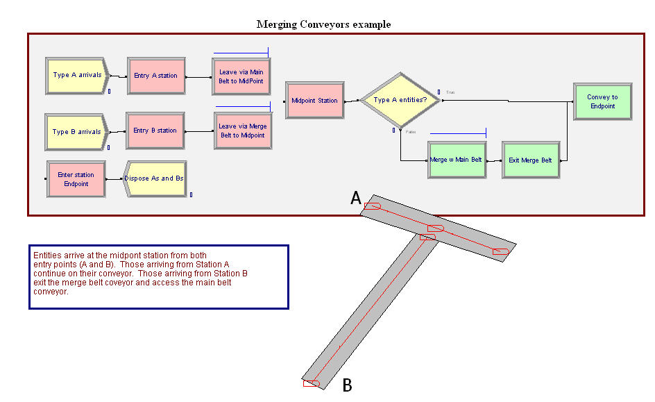
A similar example, Figure 7.40, involves the merging of one conveyor onto anther conveyor as in SMART file, Smarts110.doe. In this example, there are two conveyors. The main conveyor has two segment lengths associated with it. For example, the main conveyor goes from Entry A Station to the Midpoint Station to the EndPoint station, with lengths 5 feet respectively. The second conveyor is a single conveyor from the Entry B station to the MidPoint Station with a length of 10 feet. Notice that the MidPoint station is associated with segments related to the two conveyors. In other words, they share a common station. The entities arrive at both the Entry A and Entry B stations. Entities that arrive at the Entry A station first convey to the MidPoint station and then immediately convey to the EndPoint station. They do not exit the conveyor at the MidPoint station. Entities from the Entry B station are conveyed to the MidPoint station. Once at the MidPoint station they first ACCESS the main conveyor and then EXIT their conveyor. This causes entities coming from Entry B to potentially wait for space on the main conveyor. This basic idea can be expanded to any number of feeder conveyors along a longer main conveyor.
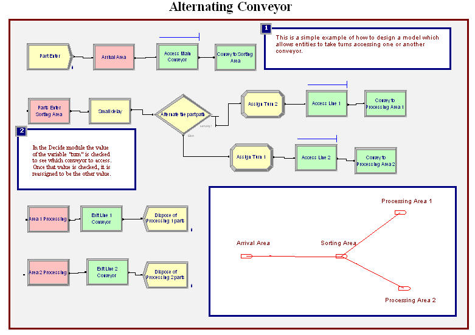
Diverging conveyors are often used in systems that sort items. The items come in on one main conveyor and are transferred to any number of other conveyors based on their attributes (e.g. destination). Arena’s Smarts108.doe file illustrates the basic concepts behind diverging conveyors. In this example, as shown in Figure 7.41, the parts arrive to the arrival area and access a conveyor to the sorting area. Once an entity reaches the sorting station, the entity first exits the incoming conveyor and then there is a small delay for the sorting. The module labeled “Parts Enter Sorting Area” is an ENTER module with the transfer in option used to exit the conveyor. Then the entity is shunted down one of the lines based on a DECIDE module. In this model, a variable is used to keep track of the last line that an entity was sent to so that the other line will be used in the DECIDE for the next entity. This implements a simple alternating logic. After being shunted down one of the conveyors, the entity uses the standard ACCESS, CONVEY, STATION, EXIT logic before being disposed.
With a little imagination a more sophisticated sorting station can be implemented. For example, a number of conveyors that handle the parts by destination might be used in the system. When the parts are created they are given an attribute indicating their destination station. When they get to the sorting station, a DECIDE module can be used to pick the correct conveyor handling their destination.
7.3.3.3 Processing while on the Conveyor
In the bicycle example from Smarts101.doe, the workers can be conceptualized as moving along with the conveyor as they assemble the bicycles. In many systems it is common for a machine to be positioned to use the surface of the conveyor as its work area. For example, in circuit board manufacturing, the circuit boards ride on a conveyor through chip placement machines. While in the machine, the conveyor stops to do the insertion. These types of situations can be easily modeled by not exiting the conveyor before undergoing a PROCESS module.
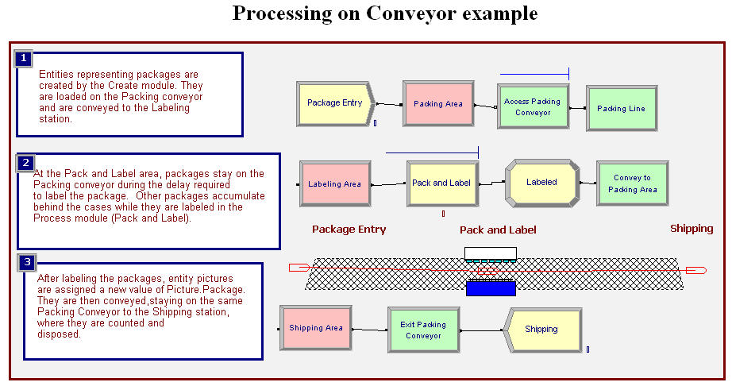
Arena’s SMART file, Smarts103.doe, contains an example of this type of modeling. In this example, as shown in Figure 7.42, packages are created for the packing area, where they access and convey on a conveyor to the pack and label station. The conveyor consists of two segments attached at the pack and label station. Once at the Labeling Area station the entity enters a PROCESS module, which requires a delay and the labeling machine. Notice that the entity did not exit the conveyor. The “Loading Area" module is a simple STATION module. After completing the processing, the entity proceeds to be conveyed to the shipping area, where it exits the conveyor. In this example, the conveyor is a non-accumulating conveyor. If you run the model, you will see that the whole conveyor stops when the entity is being processed. If an accumulating conveyor is used, the packages would queue up behind the labeling machine.
7.3.3.4 Recirculating Conveyors
A recirculating conveyor is a loop conveyor in which the entities may ride on the conveyor until there is adequate space at their desired location. In essence the conveyor is used as space to hold the entities that cannot get off due to inadequate space at the necessary station. For example, suppose that in the test and repair shop there was only space for one waiting part at test station two. Thus, the size of test station two’s queue can be at most 1.
The previous model can be easily modified to handle this situation by not using an ENTER module at test station 2. Figure 7.43 shows the changes to the logic for test station 2 to handle this situation. As can be seen in the figure, the ENTER module has been replaced with a combination of STATION, DECIDE, EXIT, and CONVEY. The DECIDE module checks the queue at the Testing Process 2 module. If a part is not in the queue, then the arriving part can exit the conveyor at the station and try to seize the testing resources. If there is a part waiting, then the arriving part is sent to the CONVEY module to be conveyed back around to test station 2. As long as there is a path back to the station, this is perfectly fine (as in this case). The modified model is available with the files for this chapter in the file called RepairShopWithRecirculatingConveyorsWithAnimation.doe. If you run the model and watch the animation, you will see much more parts on the conveyor because of the re-circulation.
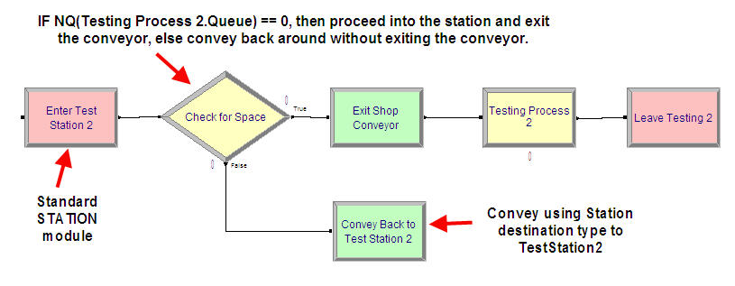
There are still a number of issues related to conveyor modeling that have not been discussed, especially the use of the specialized variables defined for conveyors. You should refer to the Arena’s Variables Guide or to Arena’s help system under conveyor variables for more information on this topic. There are also has a number of other SMART files that illustrate the use of conveyors. For example, you might want to explore SMART file, Smarts105.doe, to better understand entity size and how it relates to cells on the conveyor. Conveyors allow the modeling of space through the used of cells. The next section examines how Arena models space when it is relevant for transporter modeling.
7.4 Modeling Guided Path Transporters
This section presents Arena’s modeling constructs for automated guided vehicle (AGV) systems. An AGV is an autonomous battery powered vehicle that can be programmed to move between locations along paths. A complete discussion of AGV systems is beyond the scope of this text. The interested reader should refer to standard texts on material handling or manufacturing systems design for a more complete introduction to the technology. For example, the texts by (Askin & Standridge, 1993) and (Singh, 1996) have complete chapters dedicated to the modeling of AGV systems. For the purposes of this section, the discussion will be limited to AGV systems that follow a prescribed path (e.g. tape, embedded wires, etc) to make things simpler. There are newer AGVs that do not rely on following a path, but rather are capable of navigating via sensors within buildings, see for example (Rossetti & Seldanari, 2001).
When modeling with guided transporters, the most important issue to understand is that the transporters can now compete with each other for the space along their paths. The space along the path must be explicitly modeled (like it was for conveyors) and the size of the transporter matters. Conceptually, a guided transporter is a mobile resource that moves along a fixed path and competes with other mobile resources for space along the path. When using a guided transporter, the travel path is divided into a network of links and intersections. This is called the vehicle’s path network. Figure 7.44 illustrates the major concepts in guided vehicle modeling: networks, links, intersections, and stations.
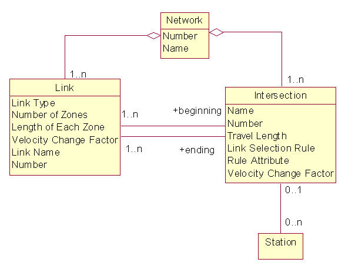
A link is a connection between two points in a network. Every link has a beginning intersection and an ending intersection. The link represents the space between two intersections. The space on the link is divided into an integer number of zones. Each zone has a given length as specified in a consistent unit of measure. All zones have the same length. The link can also be of a certain type (bidirectional, spur, unidirectional). A bidirectional link implies that the transporter is allows to traverse in both directions along the link. A spur is used to model “dead ends”, and unidirectional links restrict traffic to one direction. A velocity change factor can also be associated with a link to indicate a change in the basic velocity of the vehicle while traversing the link. For example, for a link going through an area with many people present, you may want the velocity of the transporter to automatically be reduced. Figure 7.45 illustrates a simple three link network.
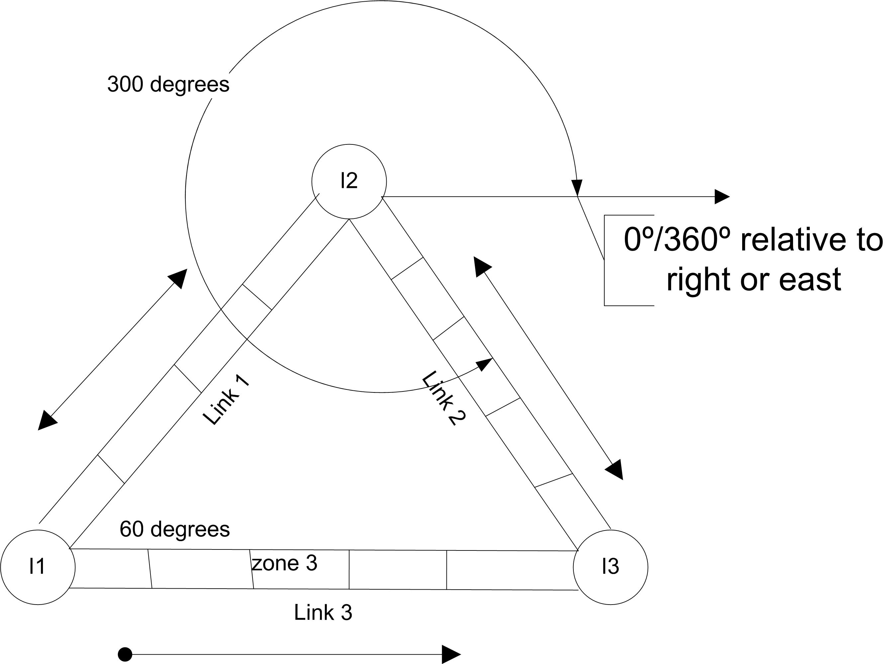
In the figure, Link 1 is bidirectional with a beginning intersection label I1 and an ending intersection labeled I2. Link 1 consists of 4 zones. There can also be a direction of travel specified. The beginning direction and the ending direction of the link can be used to define the direction of the link (in degrees) as it leaves the beginning intersection and as it enters the ending intersection. The direction entering the ending intersection defaults to the direction leaving the link’s beginning intersection. Thus, the beginning direction for Link 1 in the figure is 60 degrees. Zero and 360 both represent to the east or right. The beginning direction for Link 2 is 300 degrees. Think of it this way, the vehicle has to turn to go onto Link 2. It would have to turn 60 to get back to zero and then another 60 to head down Link 2. Since the degrees are specified from the right, this means that the link 2 is 300 degrees relative to an axis going horizontally through intersection I2. The direction of travel is only relevant if the acceleration or deceleration of the vehicles as they make turns is important to the modeling.
In general, an intersection is simply a point in the network; however, the representation of intersections can be more detailed. An intersection also models space: the space between two or more links. Thus, as indicated in Figure 7.44, an intersection may have a length, a velocity change factor, and link selection rule. For more information on the detailed modeling of intersections, you should refer to the INTERSECTIONS element from Arena’s Elements template. Also, the books by Banks et al. (1995) and (Pegden et al., 1995) cover the SIMAN blocks and elements that underlie guided path transporter modeling within . Clearly, a fixed path network consists of a set of links and the associated intersections. Also from Figure 7.44, a station may be associated with an intersection within the network and an intersection may be associated with many stations. Transporters within a guided path network can be sent to specific stations, intersections, or zones. Only the use of stations will be illustrated here.
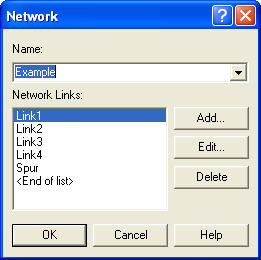
The new constructs that are to be discussed include the NETWORK and NETWORK LINK modules on the Advanced Transfer template. The NETWORK module allows the user to specify a set of links for a path network. Figure 7.46 shows the NETWORK module. To add links, the user presses the add button or uses the spreadsheet dialog box entry. The links added to the NETWORK module either must already exist or must be edited via the NETWORK LINK module. The NETWORK LINK module permits the definition of the intersections on the links, the directional characteristics of the links, number of zones, zone length, and velocity change factor. Figure 7.47 illustrates the NETWORK LINK module. Notice that the spreadsheet view of the module makes editing multiple links relatively easy.
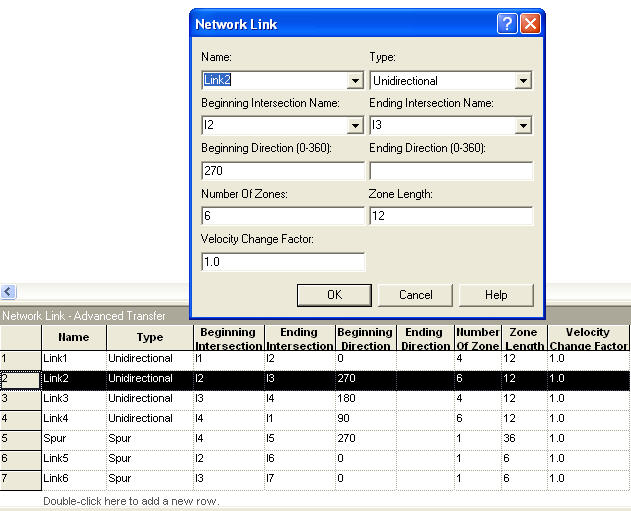
Now, let’s take a look at a simple example. In this example, parts arrive to an entry station every 25 minutes, where they wait for one of two available AGVs. Once loaded onto the AGV (taking 20 minutes) they are transported to the exit station. At the exit station, the item is unloaded, again this takes 20 minutes. The basic layout of the system is shown in Figure 7.48. There are seven intersections and seven links in this example. The distances between the intersections are shown in the figure.
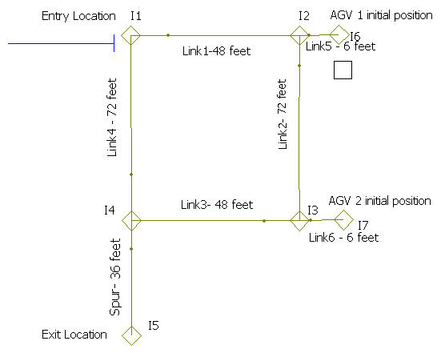
In modeling this situation, you need to make a number of decisions regarding transporter characteristics, the division of space along the links, the directions of the links, and the zone control of the links. Let’s assume that the item being transported is rather large and heavy. That’s why it takes so long to load and unload. Because of this, the transporter is a cart that is 6 feet in length and only travels 10 feet per minute. There are two carts available for transport. Figure 7.49 shows the TRANSPORTER module for using guided path transporters. When the “Guided” type is selected, additional options become available.
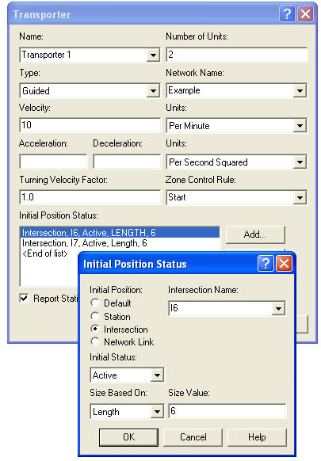
Because transporters take space on the path, the choice of initial position can be important. A transporter can be placed at a station that has been associated with an intersection, at an intersection, or on a particular zone on a link. The default option will place the transporter at the first network link specified in the NETWORK module associated with the transporter. As long as you place the transporters so that deadlock (to be discussed shortly) does not happen, everything will be fine. In many real systems, the initial location of the vehicles will be obvious. For example, since AGV’s are battery powered they typically have a charging station. Because of this, most systems will be designed with a set of spurs to act as a “home base" for the vehicles. For this simple system, intersections I6 and I7 will be used as the initial position of the transporters. All that is left is to indicate that the transporter is active and specify a length for the transporter of 6 (feet). To be consistent, the velocity is specified as 10 feet per minute. Before discussing the”Zone Control Rule”, how to specify the zones for the links needs to be discussed.
Guided path transporters move from zone to zone on the links. The size of the zone, the zone control, and the size of the transporter govern how close the transporters can get to each other while moving. Zones are similar to the cell concept for conveyors. The selection of the size of the zones is really governed by the physical characteristics of the actual system. In this example, assume that the carts should not get too close to each other during movement (perhaps because the big part overhangs the cart). In this example, let’s choose a zone size of 12 feet. Thus, while the cart is in a zone it essentially takes up half of the zone. If you think of the cart as sitting at the midpoint of the zone, then the closest the carts can be is 6 feet (3 feet to the front and 3 feet to the rear).
In Figure 7.47, Link 1 consists of 4 zones of 12 feet in length. Remember the length is whatever unit of measure you want, as long as you are consistent in your specification. With these values, the maximum number of vehicles that could be on Link 1 is four. The rest of the zone specifications are also given in Figure 7.47. Now, you need to decide on the direction of travel permitted on the links. In this system, let’s assume that the AGVs will travel clockwise around the figure. Figure 7.47 indicates that the direction of travel from I1 along Link 1 is zero degrees (to the east). Then, Link 2 has a direction of 270, Link 3 has a direction of 180, and Link 4 has a direction of 90. The spur link to the exit station has a direction of 270 (to the south). Thus, a clockwise turning of the vehicle around the network is achieved. In general, unless you specify the acceleration/deceleration and turning factor for the vehicle, the specification of these directions does not really matter. It has been illustrated here just to indicate what the modeling entails. When working with a real AGV system, these factors can be discerned from the specification of the vehicle and the physical requirements of the system.
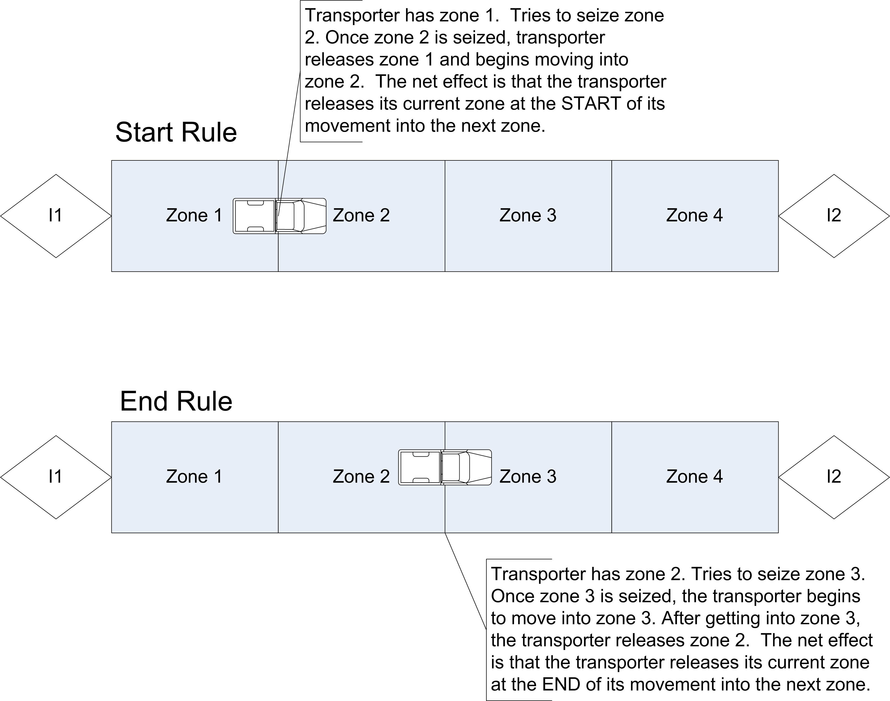
To understand why the direction of travel and spurs are important, you need to understand how the transporters move from zone to zone and the concept of deadlock. Zone control governs how the transporter moves from zone to zone. There are three types of control provided by : Start (of next zone), End (of next zone), or distance units k (into next zone). The START rule specifies that the transporter will release its backward most zone when it starts into its next zone. This allows following vehicles to immediately begin to move into the released zone. Figure 7.50 illustrates this concept. In this case, the vehicle is contained in only one zone. In general, a vehicle could cover many zones. The END rule specifies that the transporter will release its backward most zone after it has moved into the next zone (or reached the end of the next zone). This prevents a following vehicle from moving into the transporter’s current zone until it is fully out of the zone. This decision is not critical to most system operations, especially if the vehicle size is specified in terms of zones. The release at end form of control allows for more separation between the vehicles when they are moving. In the distance units k (into next zone) rule, the transporter releases its backward-most zone after traveling the k distance units through the next zone. Since, in general, intersections can be modeled with a traversal distance. These rules also apply to how the vehicles move through intersections and onto links. For more details about the operation of these rules, you should refer to 5 for a discussion of the underlying SIMAN constructs.
As indicated in the zone control discussion, guide path transporters move by seizing and releasing zones. Now consider the possibility of a bidirectional link with two transporters moving in opposite directions. What will happen when the transporters meet? They will crash! No, not really, but they will cause the system to get in a state of deadlock. Deadlock occurs when one vehicle requires a zone currently under the control of a second vehicle, and the second vehicle requires the zone held by the first vehicle. In some cases, can detect when this occurs during the simulation run. If it is detected, then will stop with a run time error. In some cases, cannot detect deadlock. For example, suppose a station was attached to I4 and a transporter (T1) was sent directly to that station for some processing. Also, suppose that the part stays on transporter (T1) during the processing so that transporter (T1) is not released at the station. Now, suppose that transporter (T2) has just dropped off something at the exit point, I5, and that a new part has just come in at I1. Transporter (T2) will want to go through I4 on its way to I1 to pick up the new part. Transporter (T2) will wait until transporter (T1) finishes its processing at I4 and if transporter (T1) eventually moves there will be no problem. However, suppose transporter (T1) is released at I4 and no other parts arrive for processing. Transporter (T1) will become idle at the station attached to I4 and will continue to occupy the space associated with I4. Since, no arriving parts will ever cause transporter (T1) to move, transporter (T2) will be stuck. There will be the one part waiting for transporter (T2), but transporter (T2) will never get there to pick it up.
Obviously, this situation has been concocted to illustrate a possible undetected deadlock situation. The point is: care must be taken when designing guided path networks so that deadlock is prevented by design or that special control logic is added to detect and react to various deadlock situations. For novice modelers, deadlock can seem troublesome, especially if you don’t think about where to place the vehicles and if you have bidirectional links. In most real systems, you should not have to worry about deadlock because you should design the system not to have it in the first place! In the simple example, all unidirectional links were used along with spurs. This prevents many possible deadlock situations. To illustrate what is meant by design, consider the concocted undetectable deadlock situation. A simple solution to prevent it would be to provide a spur for transporter (T1) to receive the processing that was occurring at the station associated with I4, and instead associate the processing station with the intersection at the end of the new spur. Thus, during the processing the vehicle will be out of the way. If you were designing a real system, wouldn’t you do this common sense thing anyway? Another simple solution would be to always send idle vehicles to a staging area or home base that gets them out of the way of the main path network.
To finish up this discussion, let’s briefly discuss the operation of spurs and bidirectional links. This discussion is based in part on (Pegden et al., 1995) page 394. Notice that the link from I4 to I5 is a spur in the previous example. A spur is a special type of link designed to help prevent some deadlock situations. A spur models a “dead end” and is bidirectional. If a vehicle is sent to the intersection at the end of the spur (or to a station attached to the end intersection), then the vehicle will need to maintain control of the intersection associated with the entrance to the spur, so that it can get back out. If the vehicle is too long to fit on the entire spur, then the vehicle will naturally control the entering intersection. It will block any vehicles from moving through the intersection. If the spur link is long enough to accommodate the size of the vehicle, the entering intersection will be released when the vehicle moves down the spur; however, any other vehicles that are sent to the end of the spur will not be permitted to gain access to the entering intersection until all zones in the spur link are available. This logic only applies to vehicles that are sent to the end of the spur. Any vehicles sent to or through the entering intersection of the spur are still permitted to gain access to the spur’s entering intersection. This allows traffic to continue on the main path while vehicles are down the spur. Unfortunately, if a vehicle stops at the entering intersection and then never moves, the situation described in the concocted example occurs.
Bidirectional links work similarly to unidirectional links, but a vehicle moving on a bidirectional link must have control of both the entering zone on the link and the direction of travel. If another vehicle tries to move on the bidirectional link it must be moving in the same direction as any vehicles currently on the link; otherwise, it will wait. Unfortunately, if a vehicle (wanting to go down a bidirectional link) gains control of the intersection that a vehicle traveling on the bidirectional link needs to exit the link, deadlock may be possible. Because it is so easy to get in deadlock situations with bidirectional links, you should think carefully about their use when using them within your models.
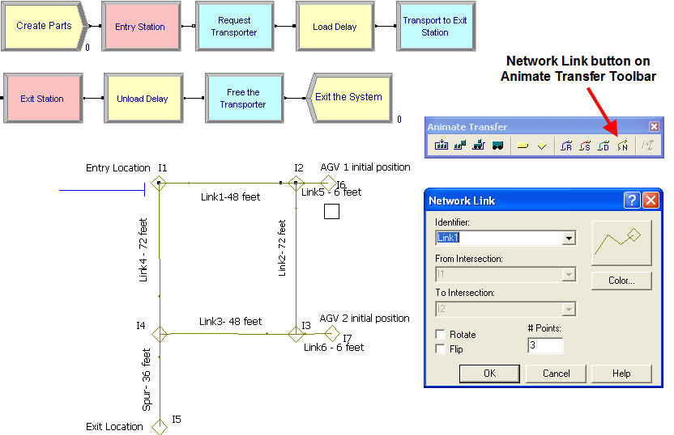
The animation of guided path transporters is very similar to regular transporters. On the Animation Transfer toolbar the Network Link button is used to lay down intersections and the links between the intersections as shown in Figure 7.51. will automatically recognize and fill the pull down text-boxes with the intersections and links that have been defined in the NETWORK LINK module. Although the diagram is not to scale, the rule or scale button comes in very handy when laying out the network links to try to get a good mapping to the physical distances in the problem. Once the network links have been placed, the animation works just like you are used to for transporters. The file, SimpleAGVExample.doe, is available for this problem. In the model, the parts are created and sent to the entry station, where they request a transporter, delay for the loading, and then transport to the exit station. At the exit station, there is a delay for the unloading before the transporter is freed. The REQUEST, TRANSPORT, and FREE modules all work just like for free path transporters.
You should try running the model. You will see that the two transporters start at the specified intersections and you will clearly see the operation of the spur to the exit point as it prevents deadlock. The second transporter will wait for the transporter already on the spur to exit the spur before heading down to the exit point. One useful technique is to use the View \(>\) Layers menu to view the transfer layers during the animation. This will allow the intersections and links to remain visible during the model run.
This section has provided a basic introduction to using guided path transporters in models. There are many more issues related to the use of these constructs that have not been covered:
The construction and use of the shortest path matrix for the guided path network. Since there may be multiple paths through the network, uses standard algorithms to find the shortest path between all intersections in the network. This is used when dispatching the vehicles.
Specialized variables that are used in guided path networks. These variables assist with indicating where the vehicle is within the network, accessing information about the network within the simulation, (e.g. distances, beginning intersection for a link, etc.), status of links, intersections, etc. Arena’s help system under “Transporter Variables” discusses these variables and a discussion of their use can also be found in
Changing of vehicle speeds, handling failures, changing vehicle size, redirecting vehicles through portions of the network, and link selection rules.
More details on these topics can be found in Banks et al. (1995) and 5. Advanced examples are also given in both of those texts, including within 5 the possible use of guided path constructs for modeling automated storage and retrieval systems (AS/RS) and overhead cranes.
7.5 Summary
This chapter provided an introduction to the modeling of entity transfer. In particular, the use of resource constrained transfer, transporters, and conveyors from an modeling perspective were all discussed. Many of these concepts are especially useful in modeling manufacturing and distribution systems. The animation of entity transfer was also discussed through a number of embellishments to the test and repair model. While still somewhat crude, the animation concepts presented in this chapter are very effective for validating and selling an model to decision makers. With more time, effort, patience, and artistic skill you can easily create compelling animations for your simulations.
A large portion of the modeling concepts within Arena have now been covered. Thus, in the next chapter, we will apply a full range of modeling constructs to a realistic problem situation.
7.6 Exercises
Exercise 7.1 Suppose a service facility consists of two stations in series (tandem), each with its own FIFO queue. Each station consists of a queue and a single server. A customer completing service at station 1 proceeds to station 2, while a customer completing service at station 2 leaves the facility. Assume that the inter-arrival times of customers to station 1 are IID exponential random variables with a mean of 1 minute. Service times of customers at station 1 are exponential random variables with a mean of 0.7 minute, and at station 2 are exponential random variables with mean 0.9 minute. Assume that the travel time between the two stations must be modeled. The travel time is distributed according to a triangular distribution with parameters (1, 2, 4) minutes.
Model the system assuming that the worker from the first station moves the parts to the second station. The movement of the part should be given priority if there is another part waiting to be processed at the first station.
Model the system with a new worker (resource) to move the parts between the stations.
From your models, estimate the total system time for the parts, the utilization of the workers, and the average number of parts waiting for the workers. Run the simulation for exactly 20000 minutes with a warm up period of 5000 minutes.
Exercise 7.2 Reconsider part (b) of Exercise 7.1. Instead of immediately moving the part, the transport worker waits until a batch of 5 parts has been produced at the first station. When this occurs, the worker moves the batch of parts to the second station. The parts are still processed individually at the second station. From your model, estimate the total system time for the parts, the utilization of the workers, and the average number of parts waiting for the workers. Run the simulation for exactly 20000 minutes with a warm up period of 5000 minutes.
Exercise 7.3 Redo Exercise 4.25 using resource constrained transfer. Assume that there are 2 workers at the diagnostic station, 1 worker per testing station, and 3 workers at the repair station. Thus, there are a total of 8 workers in the system. Furthermore, assume that any of these 8 workers are capable of moving parts between the stations. For example, when a part completes its operation at the diagnostic station, any worker in the system can carry the part to the next station. When a part requires movement, it will wait for the next available idle worker to complete the movement. Assume that parts waiting for processing at a station will be given priority over parts that require movement between stations. Build a simulation model that can assist the company in assessing the risks associated with the new contract under this resource constrained situation.
Exercise 7.4 Redo Exercise 4.26 assuming that there is a pool of 3 workers that perform the transport between the stations. Assume that the transport time is triangularly distributed with parameters (2, 4, 6) all in minutes. Make an assessment for the company for the appropriate number of workers to have in the transport worker pool.
Exercise 7.5 Redo Exercise 5.17 assuming that there is a pool of 3 workers that perform the transport between the stations. Assume that the transport time is triangularly distributed with parameters (2, 4, 6) all in minutes. Make an assessment for the company for the appropriate number of workers to have in the transport worker pool.
Exercise 7.6 In Section 7.2.1 the test and repair system was analyzed with 3 transporters. Re-analyzed this situation and recommend an appropriate number of transport workers.
Exercise 7.7 Reconsider part (b) of Exercise 7.1 Instead of modeling the problem with a resource, the problem should be modeled with a transporter. Assume that there is 1 transporter (fork truck) that must move the parts between the two stations. The distance between the two stations is 100 meters and the fork truck’s velocity between the stations is triangularly distributed with parameters (25, 50, 60) in meters per minute.
Model the system and estimate the total system time for the parts, the utilization of the workers, and the average number of parts waiting for the fork truck. Run the simulation for exactly 20000 minutes with a warm up period of 5000 minutes.
Instead of immediately moving the part, the fork truck waits until a batch of 5 parts has been produced at the first station. When this occurs, the fork truck is called to move the batch of parts to the second station. The parts are still processed individually at the second station. Redo the analysis of part (a) for this situation.
Exercise 7.8 Reconsider Exercise 7.4. The distances between the four stations (in feet) are given in the following table. After the parts finish the processing at the last station of their sequence they are transported to an exit station, where they begin their shipping process.
| Station | A | B | C | D | Exit | |
| A | – | 50 | 60 | 80 | 90 | |
| B | 55 | – | 25 | 55 | 75 | |
| C | 60 | 20 | – | 70 | 30 | |
| D | 80 | 60 | 65 | – | 35 | |
| Exit | 100 | 80 | 35 | 40 | – |
There are 2 fork trucks in the system. The velocity of the fork trucks varies within the facility due to various random congestion effects. Assume that the fork truck’s velocity between the stations is triangularly distributed with parameters (3, 4, 5) miles per hour. Simulate the system for 30000 minutes and discuss the potential bottlenecks in the system.
Exercise 7.9 Reconsider the Test and Repair example from Section 7.2.1 In this problem, the workers have a home base that they return to whenever there are no more waiting requests rather than idling at their last drop off point. The home base is located at the center of the shop. The distances from each station to the home base are given in as follows.
| Station | Diagnostics | Test 1 | Test 2 | Test 3 | Repair | Home base | |
| Diagnostics | – | 40 | 70 | 90 | 100 | 20 | |
| Test 1 | 43 | – | 10 | 60 | 80 | 20 | |
| Test 2 | 70 | 15 | – | 65 | 20 | 15 | |
| Test 3 | 90 | 80 | 60 | – | 25 | 15 | |
| Repair | 110 | 85 | 25 | 30 | – | 25 | |
| Home base | 20 | 20 | 15 | 15 | 25 | – |
Update the animation so that the total number of waiting requests for movement is animated by making it visible at the home base of the workers. Rerun the model using the same run parameters as the chapter example and report the average number of requests waiting for transport. Give an assessment of the risk associated with meeting the contract specifications based on this new design.
Exercise 7.10 Reconsider Exercise 6.12 with transporters to move the parts between the stations. The stations are arranged sequentially in a flow line with 25 meters between each station, with the distances provided as follows:
| Station | 1 | 2 | 3 | Exit | |
| 1 | – | 25 | 50 | 75 | |
| 2 | 25 | – | 25 | 50 | |
| 3 | 50 | 25 | – | 25 | |
| Exit | 75 | 50 | 25 | – |
Assume that there are two transporters available to move the parts between the stations. Whenever a part is required at a down stream station and a part is available for transport the transporter is requested. If no part is available, no request is made. If a part becomes available, and a part is need, then the transporter is requested. The velocity of the transporter is considered to be TRIA(22.86, 45.72, 52.5)in meters per minute. By using the run parameters of Exercise 6.12, estimate the effect of the transporters on the throughput of the system.
Exercise 7.11 Three independent conveyors deliver 1 foot parts to a warehouse. Once inside the warehouse, the conveyors merge onto one main conveyor to take the parts to shipping. Parts arriving on conveyor 1 follow a Poisson process with a rate of 6 parts per minute. Parts arriving on conveyor 2 follow a Poisson process with a rate of 10 parts per minute. Finally, parts arriving on conveyor 3 have an inter-arrival time uniformly distributed between (0.1 and 0.2) minutes. Conveyors 1 and 2 are accumulating conveyors and are 15 and 20 feet long respectively. They both run at a velocity of 12 feet per minute. Conveyor 3 is an accumulating conveyor and is 10 feet long. It runs at a velocity of 20 feet per minute. The main conveyor is 25 feet long and is an accumulating conveyor operating at a speed of 25 feet per minute. Consider the parts as being disposed after they reach the end of the main conveyor. Simulate this system for 480 minutes and estimate the accessing times and the average number of parts waiting for the conveyors.
Exercise 7.12 Reconsider Exercise 6.12 with conveyors to move the parts between the stations. Suppose that a single non-accumulating conveyor of length 75 meters, with 25 meter segments between each of the stations is used in the system. When a part is needed by a downstream station, it is loaded onto the conveyor if available. The load time takes between 15 and 45 seconds, uniformly distributed. The speed of the conveyor is 5 meters per minute. If a part is produced and the downstream station requires the part, it is loaded onto the conveyor. By using the run parameters of Exercise 6.12, estimate the effect of the conveyors on the throughput of the system.
Exercise 7.13 This problem considers the use of AGVs for the Test and Repair System of this chapter. The layout of the proposed system is given in Figure 7.52 with all measurements in meters.

There is only 1 AGV in this system. It is 1 meter in length and moves at a velocity of 30 meters per minute. Its home base is at the dead end of the 9 meter spur. Since there will be only one AGV all links are bidirectional. The design associates the stations with the nearest intersection on the path network.
Simulate the system for 10 replications of 4160 hours. Estimate the chance that the contract specifications are met and the average system time of the jobs. In addition, assess the queuing for and the utilization of the AGV.
Consider the possibility of having a 2 AGV system. What changes to your design do you recommend? Be specific enough that you could simulate your design.
Exercise 7.14 (This problem is based on an example on page 223 of (Pegden et al., 1995). Used with permission) Reconsider Excercise Exercise 5.18 with the use of transporters. Assume that all parts are transferred by using two fork trucks that travel at an average speed of 150 feet per minute. The distances (in feet) between the stations are provided in the table below.
| Enter | Workstation | Paint | New Paint | Pack | Exit | |
|---|---|---|---|---|---|---|
| Enter | – | 325 | 445 | 445 | 565 | 815 |
| Workstation | – | 120 | 130 | 240 | 490 | |
| Paint | – | 250 | 120 | 370 | ||
| New Paint | – | 130 | 380 | |||
| Pack | – | 250 | ||||
| Exit | – |
The distances are symmetric. Both the drop-off and pickup points at a station are at the same physical location. Once the truck reaches the pickup/drop-off station, it requires a load/unload time of two minutes.
Analyze this system to determine any potential bottleneck operations. Report on the average flow times of the parts as a whole and individually. Also obtain statistics representing the average number of parts waiting for allocation of a transporter and the number of busy transporters. Run the model for 600,000 minutes with a 50,000 minute warm up period. Develop an animation for this system that illustrates the transport and queuing within the system.
Exercise 7.15 (This problem is based on an example on page 381 of (Pegden et al., 1995). Used with permission). Reconsider Exercise 7.14 with the use of AGVs. There are now 3 AGVs that travel at a speed of 100 feet per minute to transport the parts within the system.
To avoid deadlock situations the guided path network has been designed for one way travel. In addition, to prevent an idle vehicle from blocking vehicles performing transports, a staging area (Intersection 12)has been placed on the guided path network. Whenever a vehicle completes a transport, a check should be made of the number of requests pending for the transporters. If there are no requests pending, the AGV should be sent to the staging area. If there are multiple vehicles idle, they should wait on Link 11. Link 15 is a spur from intersection 6 to intersection 11. The stations for the operation on the parts should be assigned to the intersections as shown in the figure. The links should all be divided into zones of 10 feet each. The initial position of the vehicles should be along Link 11. Each vehicle is 10 feet in length or 1 zone. The release at start form of zone control should be used.
The guided path network for the AGVs is given in Figure 7.53:
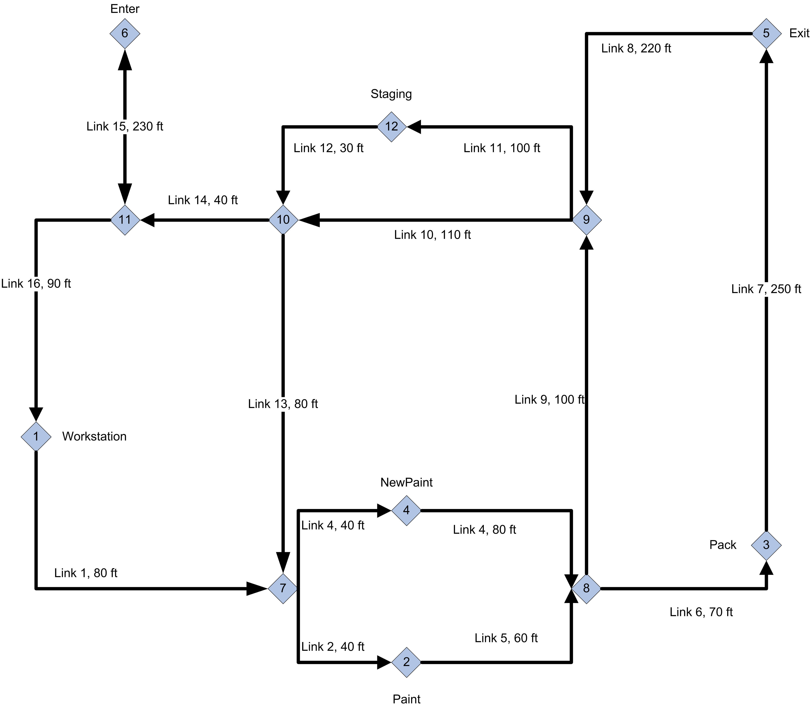
Analyze this system to determine any potential bottleneck operations. Report on the average flow times of the parts as a whole and individually. Also obtain statistics representing the average number of parts waiting for allocation of a transporter and the number of busy transporters. Run the model for 600,000 minutes with a 50,000 minute warm up period. Develop an animation for this system that illustrates the transport and queuing within the system.
Exercise 7.16 A single automatic guided vehicle (AGV) is used to pick up finished parts from three machines and drop them off at a store room. The AGV is designed to carry 5 totes. Each tote can hold up to 10 parts. The machines produce individual parts according to a Poisson process with the rates indicated in the table below. The machines are designed to directly drop the parts into a tote. When a tote is full, it is released down a gravity conveyor to the AGV loading area. It takes 2 seconds for the tote to move along the conveyor to the machine’s loading area.
| Station | Production Rate | Tote Loading Time | Travel distance to next station |
|---|---|---|---|
| Machine 1 | 2 per minute | uniform(3,5) seconds | 40 meters |
| Machine 2 | 1 per minute | uniform(2,5) seconds | 28 meters |
| Machine 3 | 3 per minute | uniform(4,6) seconds | 55 meters |
The AGV moves from station to station in the sequence (Machine 1, Machine 2, Machine 3, store room). If there are totes waiting at the machine’s loading area, the AGV loads the totes up to its capacity. After the loading is completed, the AGV moves to the next station. If there are no totes waiting at the station, the AGV delays for 5 seconds, if any totes arrive during the delay they are loaded; otherwise, the AGV proceeds to the next station. After visiting the third machine’s station, the AGV proceeds to the store room. At the storeroom any totes that the AGV is carrying are dropped off. The AGV is designed to release all totes at once, which takes between 8 and 12 seconds uniformly distributed. After completing its visit to the store room, it proceeds to the first machine. The distance from the storeroom to the first station is 30 meters. The AGV travels at a velocity of 30 meters per minute. Simulate the performance of this system over a period of 10,000 minutes.
Estimate the average system time for a part. What is the average number of totes carried by the AGV? What is the average route time? That is, what is the average time that it takes for the AGV to complete one circuit of its route?
Suppose the sizing of the loading area for the totes is of interest. What is the required size of the loading area (in terms of the number of totes) such that the probability that all totes can wait is virtually 100%.